CONTENT OUTLINE
Linux
〇、目录
Ubuntu问题Linux简介Linux开发入门- 开发环境搭建
- 创建Linux控制台项目
- Linux标准库函数
- 网络编程基础
- linux系统编程：进程
- linux系统编程：线程
- I/O复用
- 动态库项目
一 Ubuntu问题
1 安装虚拟机
1.1 安装步骤
安装虚拟机：参考原文 虚拟机下载VM16【公众号：软件科技汇】
Ubuntu.vmdk文件：虚拟机磁盘文件
1.2 关于VMware
相关组合键
1 | Ctrl + Alt +Enter 虚拟机全屏 |
1.3 解决虚拟启动问题【关于BIOS设置】
一般在Advanced、Security、BIOS Features、Configuration下面，找到Intel Virtualization Technology按回车键选择Enabled，表示开启。
进入BIOS之后选择某个选项按Enter是进入，按Esc是返回，按F10或F4保存。
联想拯救者怎么进入
bios？1、联想拯救者在开机或重启状态下，在开机等待界面，连续按快捷键
F2（或是Fn+F2）即可进入bios。2、
nova孔是联想拯救者快捷进入bios的方式之一，而且不仅是联想拯救者系列，联想旗下多个系列的产品都设置有该功能。用户在笔记本侧边找到nova孔，用针或牙签刺入，即可调出快捷菜单。选择bios进入即可【右侧USB孔旁】
2 Little Problems
2.1 屏幕显示大小调整
屏幕显示大小调整： 设置→
Devices→Displays→Resolution
2.2 初始su密码错误
原文解决
Ubuntu刚安装后，在终端中运行su命令要求输入密码，出现密码错误。
原因：root没有默认密码，需要手动设定。以安装ubuntu时输入的用户名登陆，该用户在admin组中，有权限给root设定密码
1 | sudo passwd [root] 或者 sudo passwd |
2.3 Ubuntu上修改主机名
方法一：修改文件【需要先获取root权限】
1
2$ gedit /etc/hostname
$ gedit /etc/hosts方法二：hostname文件的修改可使用命令完成【需要先获取root权限】
1
hostnamectl set-hostname new-hostname
2.4 Ubuntu安装一直卡黑屏
1 | Please remove the installation medium then reboot |
2.5 修改最佳apt下载服务器
可参考此
Ubuntu18.04：打开Software and Update，直接stop其自动检查，就会出现设置
2.6 错误：无法得到锁
问题：新搭建的Ubuntu虚拟机，执行apt安装命令是报错could not get lock /var/lib/dpkg/lock-frontend
问题原因：存在另外一个进程在使用这个目录：/var/lib/dpkg/lock-frontend，【比如，正在更新软件Cache】。所以先确定是否还有其他人在使用软件管理程序或者在使用apt进行软件的安装，如果没有的话，可以直接删除/重命名被锁定的文件。
解决：
1 | sudo rm /var/lib/dpkg/lock-frontend |
2.7 Ubuntu打开终端时自动退出base环境
1 | conda config --set auto_activate_base false |
2.8 虚拟机内容到Windows
1 | #路径【共享文件】 |
3 Ubuntu 分区号Sda的解释
主分区：一块物理硬盘上可以被独立使用的一部分，一个硬盘最多可以有4个主分区
扩展分区：为了突破一个物理硬盘只能有4个分区的限制，引入了扩展分区。扩展分区和主分区的地位相当，但是扩展分区本身不能被直接使用，然而可以被继续划分成多个逻辑分区。
逻辑分区：逻辑分区可以有任意多个，但是不能独立存在，多个连续的逻辑分区可做为一个扩展分区。一个硬盘只能有一个扩展分区。
总结：也就是说，在一个物理硬盘上主分区和扩展分区加在一起最多仍然只有4个。但是扩展分区可以继续被划分成逻辑分区，而对多数用户而言，其实主分区和逻辑分区在使用上是没什么区别的。这样就达到了一快硬盘几乎可以有无限个分区的目的。
LINUX下分区实例分析：
现在电脑上有一个SCSI硬盘，这时查看设备ls /dev，会发现有一个sda，如果是IDE硬盘，就是hda。
分区方案一：4个主分区【这时候能看到：
sda,sda1,sda2,sda3,dsa4】分区方案二：一个主分区然后一个逻辑分区【这时候能看到：
sda,sda1,sda2,sda5】这里
sda是物理硬盘，sda1是主分区，sda2是扩展分区，sda5是逻辑分区（正是因为必须保留4个数字给主分区和扩展分区使用，所以逻辑分区的数字必须从5开始）。分区方案三：一个逻辑分区
这里能看到：sda，sda1，sda5
见到这些数字不要害怕，这样一解释就很容易理解了。如果有多块物理硬盘就会出现sdb，sdc
4 Ubuntu快捷键
1 | Ctrl + Alt + T 快速打开终端 |
vim或命令行下：鼠标左键选中即为复制， 按下中键（鼠标滚轮）即为粘贴
5 通用终端命令
Ubuntu为Linux内核的，故Linux命令均可用于Ubuntu
1 | chase@chaseVM:~S ----- #用户名@计算机名:绝对路径$ |
二 Linux简介
1 系统介绍
- 开源的发行版本
- Linux系统族谱
知名Linux系统： Ubuntu、RedHat、CentOS、Debian、Fedora、SuSE、OpenSUSE、Arch Linux、SolusOS 等
为什么要学习Linux？
- Linux系统在服务器市场的占有率（2016年）
世界上500个最快的超级计算机90％以上运行Linux发行版或变种，包括最快的前10名超级计算机运行的都是基于Linux内核的操作系统。Linux也广泛应用在嵌入式系统上，如手机（Mobile Phone）、平板电脑（Tablet）、路由器（Router）、电视（TV）和电子游戏机等。在移动设备上广泛使用的Android操作系统就是创建在Linux内核之上。
Linux的优点：
- 开源免费、可自行修改，对其他开源软件兼容性良好
- 多用户访问友好、权限管理方便快捷
- 内存管理优秀，可以长期连续运行，系统占用内存低
- 工具功能库完善，部署安装方便
Windows下Linux虚拟机的安装与启动【子系统方法】【更推荐VM虚拟机的方式】
首先开启开发人员模式【这种方式在windows上比较兼容，运行速度快，占用内存小】，然后启用子系统功能【设置-应用-程序和功能-启用或关闭windows功能】
上面的设置打开之后，打开win10的微软应用商店，再搜索Ubuntu，选择Ubuntu18.04 LTS【Long Time Support】
LTS表示长期支持版本，不选择20.04是因为该版本太新，一些库可能支持的还不是那么好。另外可能有一些潜在的缺陷，18.04则已经运行两三年了，环境相对更加稳定，支持的库更稳定和丰富
点击18.04后，进入详情页面；点击获取，即可下载安装该虚拟机；安装完成之后，即可在开始菜单中
看到图标，点击图标即可启动Ubuntu子系统
出现install wrong已解决参考
2
wsl.exe –update：进行升级
2 基本命令
2.1 ls命令
命令ls是list的缩写，其作用是列出指定位置的文件和文件夹【如果没有指定，默认是列出当前位置的文件或者文件夹】
可通过字体颜色和背景颜色区分是否未文件夹和权限，如：
- 白色字体为文件
- 蓝色字体为文件夹
- 绿色字体为可执行
- 红色字体一般为压缩包
- 绿色背景为拥有全部权限
- 蓝色背景为拥有部分权限
常用的参数有
-a：列出所有的文件或者文件夹
在Linux系统里面，以 . 开头的文件或者文件夹，一般会被默认视为隐藏文件。如果想要查看这些隐藏文件或者文件夹，最好使用-a参数
-l：列出详细信息
默认ls只显示名字，并不显示详细信息。-l参数除了会显示名称以外，还会显示文件的权限、所属用户、分组、大小、修改日期
d开头：文件夹；p开头：管道- 紧接着的3x3个位置为root用户权限、当前用户权限、普通其他用户权限。rwx分别为读、写、执行
- 结合
-a使用：ls -al l缩写自：long list format或者long
-h：增加可读性
默认文件是按照字节为单位显示大小的。-h参数会使得附带K、M、G、T等大小后缀【K表示千字节、M表示兆字节、G表示1024兆、T表示1024G】
- 虽然精准度下降了，但是更容易阅读
- 结合
-a使用：ls -ah - 缩写自：human readable
-R：递归访问
默认是显示当前目录下的文件和文件夹。R参数后，如果当前目录下有其他文件夹，则会将该文件夹下面的文件和文件夹也显示出来
- R缩写自：recursion 递归
-r: 反向排序输出
-Q：文件名用双引号包裹
该参数是为了防止某些文件或者文件夹的末尾是空格字符。这样可以通过双引号，看到文件名实际的长度
【Q缩写自：quotation mark】
-t：按时间排序
按文件最近的一次修改时间排序【t：time】
2.2 echo命令
1 | #显示字符串 |
2.3 cd命令
cd 目标路径【change directory】路径可以是绝对路径，也可以是相对路径。除此之外，还有一些特别的符号：
.表示当前目录..表示上一级目录（也就是父目录）~表示当前用户的用户目录【在root用户和普通用户条件下，符号~是有不同含义的】【Linux磁盘不分区】- 普通用户
~一般是/home/用户名文件夹 - root用户对应的
~是/root文件夹
- 普通用户
2.4 head命令
默认显示文件前十行内容
-c n：显示头部的指定n个字符【char】-n x：显示头部的指定的x行-v：显示文件名【配合脚本遍历输出文件内容】-q：不显示文件名
2.5 tail命令
一些简单命令：
1 | #显示当前目录 |
tail命令默认显示尾部十行，-c -n -v -q同head命令，以下是另外的一些：
-f：可以不断的更新尾部内容【在另一个窗口修改文件，会实时显示】
2.6 ps命令
- 所有进程都是
init进程的子进程或者孙进程 - 默认显示由自己创建的进程
- ps只显示ps执行瞬间进程的状态
常用参数：
-Al：显示所有进程的详情和进程名称【缩写自All long format】- tty：字符交互环境，即串口设备
-Al关注【PRI进程优先级，越小越好；PPID父进程；UID用户ID，0为root用户】
-aux：显示所有进程和其启动命令【cmd带参数；STAT状态，s为sleep，R为running】-au：显示所有进程
数值项说明
1 | USER 进程所属用户 |
2.7 cp命令
copy复制的缩写，命令用法如下：
1 | cp [参数] 源文件/文件夹 目标文件/文件夹 #【默认不能复制文件夹】 |
[]表示可选sudo命令提权mkdir创建文件夹
常用参数：
-a：带属性复制【此选项通常在复制目录时使用，它保留链接、文件属性，并复制目录下的所有内容。其作用等于dpR参数组合】【d复制时保留链接；p为带权限复制；R为递归】-d：复制时保留链接【这里所说的链接相当于Windows系统中的快捷方式】-f：强制覆盖【覆盖已经存在的目标文件而不给出提示】【Ubuntu默认是强制覆盖】-i：覆盖提示【与-f选项相反，在覆盖目标文件之前给出提示，要求用户确认是否覆盖，回答y时目标文件将被覆盖】-p：带权限复制【除复制文件的内容外，还把修改时间和访问权限也复制到新文件中】-r：文件夹复制【若给出的源文件是一个目录文件，此时将复制该目录下所有的子目录和文件】-l：创建链接【不复制文件，只是生成链接文件【只在部分系统有效，在Ubuntu下没有效果】
2.8 rm命令
命令remove的缩写，删除文件或文件夹【需要参数】
常用参数：
-i：删除确认：每个被删除的文件都需要确认-f：强制删除：无需确认就会删除指定的文件-r：目录删除：删除指定文件夹下的所有文件和子文件夹【-ir可组合使用】
2.9 chmod命令
2.9.1 基本介绍
chmod 命令是 Unix 和 Linux 系统中的一个用于修改文件或目录的访问权限的命令。它可以控制文件或目录的读、写、执行权限，以及文件或目录的所有者、所属组等信息。
语法：chmod [选项] [模式] 文件或目录
参数：
u：表示所有者g：表示所属组o：表示其他用户a：表示所有用户r：表示读权限w：表示写权限x：表示执行权限+：表示增加权限-：表示减少权限=：表示赋予指定权限
Linux/Unix 的文件调用权限分为三级 : 文件所有者【Owner】、用户组【Group】、其它用户【Other Users】，以下几点需注意：
- 只有文件所有者和超级用户root可以修改文件或目录的权限
- 可以使用绝对模式【八进制数字模式】或符号模式指定文件的权限，而使用权限则为所有使用者
- 符号模式与绝对模式的关系如下图
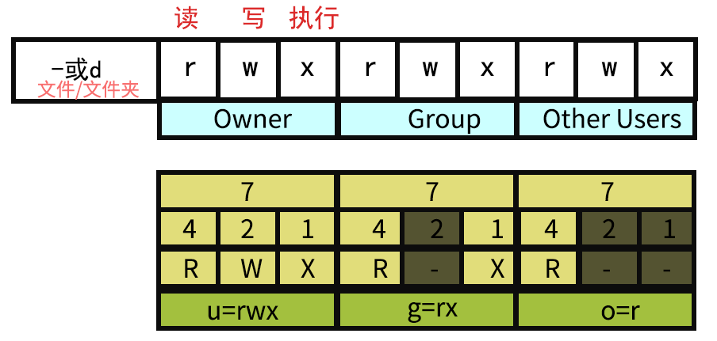
2.9.2 符号模式
- 使用符号模式可以设置多个项目：who【用户类型】、operator【操作符】和 permission【权限】，每个项目的设置可以用逗号隔开
- 命令 chmod 将修改
who【指定是用户类型】对文件的访问权限，用户类型由一个或者多个字母在who的位置来说明。
用户类型参数：
| who | 用户类型 | 说明 |
|---|---|---|
| u | user | 文件所有者 |
| g | group | 文件所有者所在组 |
| o | others | 所有其他用户 |
| a | all | 所有用户，和ugo使用一样 |
操作符参数：
| Operator | 说明 |
|---|---|
| + | 为指定的用户类型增加权限 |
| - | 为指定的用户类型去除权限 |
| = | 直接重置用户类型的所有权限 |
符号模式参数：
| Permission | 名字 | 说明 |
|---|---|---|
| r | 读 | 设置为可读权限 |
| w | 写 | 设置为可写权限 |
| x | 执行权限 | 设置为可执行权限 |
| X | 特殊执行权限 | 只有当文件为目录文件，或者其他类型的用户有可执行权限时，才将文件权限设置可执行 |
| s | setuid/gid | 当文件被执行时，根据who参数指定的用户类型设置文件的setuid或者setgid权限 |
| t | 粘贴位 | 设置粘贴位【只有超级用户可以设置该位，只有文件所有者u可以使用该位】 |
举例：
1 | chmod a=rwx file #表示所有用户都可读写执行 |
2.9.3 八进制语法
chmod 命令可以使用八进制数来指定权限。
文件或目录的权限位是由9个权限位来控制，每三位为一组，它们分别是文件所有者（User）的读、写、执行，用户组（Group）的读、写、执行以及其它用户（Other）的读、写、执行。历史上，文件权限被放在一个比特掩码中，掩码中指定的比特位设为1，用来说明一个类具有相应的优先级。
| num | 权限 | 对应符号 | 二进制 |
|---|---|---|---|
| 7 | 读 + 写 + 执行 | rwx | 111 |
| 6 | 读 + 写 | rw- | 110 |
| 5 | 读 + 执行 | r-x | 101 |
| 4 | 只读 | r– | 100 |
| 3 | 写 + 执行 | -wx | 011 |
| 2 | 只写 | -w- | 010 |
| 1 | 只执行 | –x | 001 |
| 0 | 无 | — | 000 |
举例：
1 | #语法为： |
2.9.4 接四位数字的情况
有时，对于特殊需求提供一位特殊文件权限标识位。同理，正常的rwx，现有额外的一位八进制数，其现设为三位二进制a、b、c依序组成。
- a代表
setuid位：如果该位为1，则表示设置setuid - b代表
setgid位：如果该位为1，则表示设置setgid - c代表
sticky位：如果该位为1，则表示设置sticky
如6755，对应权限为
-rwsr-sr-x
setuid 意为：设置使文件在执行阶段具有文件所有者的权限。比如/usr/bin/passwd，如果一般用户执行该文件，则在执行过程中，该文件可以获得root权限，从而可以更改用户的密码。
setgid 意为：该权限只对目录有效。目录被设置该位后，任何用户在此目录下创建的文件都具有和该目录所属的组相同的组。
sticky bit 意为：该位可以理解为防删除位【一个文件是否可以被某用户删除，主要取决于该文件所属的组是否对该用户具有写权限】
如果没有写权限，则这个目录下的所有文件都不能被删除，同时也不能添加新的文件
如果希望用户能够添加文件但同时不能删除文件，则可以对文件使用
sticky bit位。设置该位后，就算用户对目录具有写权限也不能删除该文件。例如，如果在rwx=777的前提额外想要使文件拥有sticky bit与setgid，即使用如下命令：
1
$ chmod 3777 【文件】
2.9.5 权限修改示例
问题1：使用echo命令输出内容到某个文件时，系统提示我们权限不够，无法执行这个操作。
分析：对文件进行写入操作，如果目标文件的写入权限并不属于当前用户或当前用户所在的用户组，就会出现权限不够的错误。在这种情况下，即使我们是通过sudo命令以超级用户的权限运行echo命令，也无法绕过文件的权限设置。
解决：
- 修改文件的权限：【chmod命令修改文件的权限】例如，
chmod +w filename - 切换用户：尝试切换为拥有相应权限的用户。例如，可以使用su命令切换用户，或者使用sudo命令以超级用户的权限运行echo命令
- 使用重定向符号：除了echo命令外，还可以使用重定向符号>来输出内容到文件中。这种方式相对更加灵活，且不会受到文件权限的限制。
2.10 chown
chown 命令是 Unix 和 Linux 系统中的一个用于修改文件或目录的所属用户和组的命令。它可以将文件或目录的所有权转移给其他用户或组，只有文件的所有者或超级用户才能使用这个命令进行修改。
1 | # chown [选项] [所有者][:[组]] 文件或目录 |
注意：
- chown 命令默认只修改文件或目录的所有者，如果要修改组，需要使用
:分隔符指定组名。
2.11 其他命令【🔺】
1 | #【查看test.cpp内容】 |
3 常见错误【🔺】
3.1 镜像源问题
1 | Unable to fetch some archives, maybe run apt-get update or try with --fix-missing? |
解决：现无法定位问题，是因为找不到源镜像导致的，只需要将/etc/apt/路径下的source.list文件内容改成对应的源镜像【参考】
3.2 Systemd与service
1 | System has not been booted with systemd as init system (PID 1). Can't operate. |
解决：目前的理解是，这是两套相互对应的命令体系【参考】
三 Linux开发入门
1 开发环境搭建
1.1 gcc安装
- 设置root密码：
sudo passwd root【需要记住该密码，即用户名为root，密码为此】 - 进入root账户：
su【pwd、exit】 - 安装编译器：
apt-get install gcc g++【gcc调用g++来编译c++】 - 查看当前的gcc、g++版本 【
gcc --version|g++ --version】 - 验证一下：
g++ -o test main.cpp【编译cpp文件】 - 运行：
./test【可运行文件】
1.2 ssh服务的安装
该服务用户后续的代码编写和远程运行、调试
步骤：
安装服务程序：
sudo apt install openssh-server【开源免费】安装客户端程序：
sudo apt install openssh-client【客户端有一个密钥生成器】修改配置文件【
su etc/ssh/sshd_config】【windows子系统方式位置：C:\Users\Stell\AppData\Local\Packages\CanonicalGroupLimited.Ubuntu18.04LTS_79rhkp1fndgsc\LocalState\rootfs\etc\ssh】1
2
3
4
5
6
7
8
9
10
11
12
13
14
15
16
17
18
19LoginGraceTime 2m
#可能要该
PermitRootLogin yes
PubkeyAuthentication yes
PasswordAuthentication yes
ChallengeResponseAuthentication no
UsePAM yes
X11Forwarding yes
PrintMotd no
AcceptEnv LANG LC_*
Subsystem sftp /usr/lib/openssh/sftp-server
子Linux系统启动服务：
C:\Windows\System32\bash.exe -c "sudo service ssh start"- Unbuntu虚拟机启动ssh服务：
sudo service ssh - 在 linux 启动和查看ssh服务，且修改sshd配置后重启一次VM【
service ssh status|service ssh start】 - VM网络一般使用桥接模式，即本机和虚拟机ip一致；若使用NAT模式，需要使用
ifconfig查得实际ip - 此处：用户名
root；密码xin980721
- Unbuntu虚拟机启动ssh服务：
【如何开机自启动服务？】
建立一个bat文件，将上面这个命令写入其中，然后放入文件夹【开机启动项：
C:\ProgramData\Microsoft\Windows\Start Menu\Programs\StartUp或者C:\Users\你的用户名\AppData\Roaming\Microsoft\Windows\Start Menu\Programs\Startup】
2 创建Linux控制台项目
- 启动VS，在项目选择页面点击创建新项目
- 在创建新项目页面选择【C++、Linux控制台应用】【此处可能没有相应模板，可以使用VS更新来加入Linux开发相关的插件】
- 输入项目名称和解决方案名称，点击创建
- 连接Linux系统ssh服务【工具 | 选项 | 跨平台 | 连接管理器 | 添加连接】【用户名
root；密码为sudo密码xin980721；主机名：在VM中查得ip；端口22】 - 生成解决方案【具体项目右键 | 属性 | 常规 | 远程生成计算机】
- 修改远程服务器
- 修改远程根目录
- 平台工具集为
GCC for Remote Linux】 - 使用windows平台调试Linux程序
- 相应在Linux服务器中生成out文件【进入方法：
su root|cd ~】
注意：
- 由于目前绝大多数的Linux系统都是64位的，故项目一般使用x64编译
- 32位仅限于部分嵌入式系统
- 程序是在Linux上运行的，windows上只是编写和调试
3 Linux标准库函数
3.1 字符串函数
头文件<ctype.h>
用于①正则表达式规则；②解析字符串
1 | //测试字符是否为英文字母或数字: |
调用 Linux API 示例：
1 |
|
3.2 数据转换函数
头文件<stdlib.h>【包含数据转换、随机数、字符集转换】
注意：先验证，再使用
1 | //【字符串 to 浮点数】 |
【字符串 to 浮点数】示例：
1 |
|
【浮点数 to 字符串】示例：
1 |
|
3.3 格式化输入输出函数
包含在
cstdio
3.3.1 常用输入输出函数
1 | //【输出】************************************ |
示例：
1 |
|
3.3.2 printf函数format详解
| 格式字符 | 意义 |
|---|---|
| d | 以十进制形式输出带符号整数(正数不输出符号) |
| o | 以八进制形式输出无符号整数(不输出前缀0) |
| x X | 以十六进制形式输出无符号整数(不输出前缀0x) |
| u | 以十进制形式输出无符号整数 |
| f | 以小数形式输出单、双精度实数 |
| E e | 以指数形式输出单、双精度实数 |
| G g | 以%f或%e中较短的输出宽度输出单、双精度实数 |
| c | 输出单个字符 |
| s | 输出字符串 |
| p | 输出指针地址 |
| lu | 32位无符号整数 |
| llu | 64位无符号整数 |
| flags（标识） | 描述 |
|---|---|
| - | 在给定的字段宽度内左对齐，默认是右对齐（参见 width 子说明符）。 |
| + | 强制在结果之前显示加号或减号（+ 或 -），即正数前面会显示 + 号。默认情况下，只有负数前面会显示一个 - 号。 |
| 空格 | 如果没有写入任何符号，则在该值前面插入一个空格。 |
| # | 与 o、x 或 X 说明符一起使用时，非零值前面会分别显示 0、0x 或 0X。与 e、E 和 f 一起使用时，会强制输出包含一个小数点，即使后边没有数字时也会显示小数点。默认情况下，如果后边没有数字时候，不会显示显示小数点。与 g 或 G 一起使用时，结果与使用 e 或 E 时相同，但是尾部的零不会被移除。 |
| 0 | 在指定填充 padding 的数字左边放置零（0），而不是空格（参见 width 子说明符）。 |
| width（宽度） | 描述 |
|---|---|
| (number) | 要输出的字符的最小数目。如果输出的值短于该数，结果会用空格填充。如果输出的值长于该数，结果不会被截断。 |
| * | 宽度在 format 字符串中未指定，但是会作为附加整数值参数放置于要被格式化的参数之前。 |
| .precision（精度） | 描述 |
|---|---|
| .number | 对于整数说明符（d、i、o、u、x、X）：precision 指定了要写入的数字的最小位数。如果写入的值短于该数，结果会用前导零来填充。如果写入的值长于该数，结果不会被截断。精度为 0 意味着不写入任何字符。 对于 e、E 和 f 说明符：要在小数点后输出的小数位数。 对于 g 和 G 说明符：要输出的最大有效位数。 对于 s: 要输出的最大字符数。默认情况下，所有字符都会被输出，直到遇到末尾的空字符。 对于 c 类型：没有任何影响。 当未指定任何精度时，默认为 1。如果指定时不带有一个显式值，则假定为 0。 |
| .* | 精度在 format 字符串中未指定，但是会作为附加整数值参数放置于要被格式化的参数之前。 |
| length（长度） | 描述 |
|---|---|
| h | 参数被解释为短整型或无符号短整型（仅适用于整数说明符：i、d、o、u、x 和 X）。 |
| l（小写L） | 参数被解释为长整型或无符号长整型，适用于整数说明符（i、d、o、u、x 和 X）及说明符 c（表示一个宽字符）和 s（表示宽字符字符串）。 |
| L | 参数被解释为长双精度型（仅适用于浮点数说明符：e、E、f、g 和 G）。 |
附加参数 – 根据不同的 format 字符串，函数可能需要一系列的附加参数，每个参数包含了一个要被插入的值，替换了 format 参数中指定的每个 % 标签。参数的个数应与 % 标签的个数相同。
3.3.3 scanf函数format详解
| 参数 | 描述 |
|---|---|
| * | 这是一个可选的星号，表示数据是从流 stream 中读取的，但是可以被忽视，即它不存储在对应的参数中。 |
| width | 这指定了在当前读取操作中读取的最大字符数。 |
| modifiers | 为对应的附加参数所指向的数据指定一个不同于整型（针对 d、i 和 n）、无符号整型（针对 o、u 和 x）或浮点型（针对 e、f 和 g）的大小： h ：短整型（针对 d、i 和 n），或无符号短整型（针对 o、u 和 x） l ：长整型（针对 d、i 和 n），或无符号长整型（针对 o、u 和 x），或双精度型（针对 e、f 和 g） L ：长双精度型（针对 e、f 和 g） |
| type | 一个字符，指定了要被读取的数据类型以及数据读取方式。具体参见下一个表格。 |
| 类型 | 合格的输入 | 参数的类型 |
|---|---|---|
| %a、%A | 读入一个浮点值(仅 C99 有效)。 | float * |
| %c | 单个字符：读取下一个字符。如果指定了一个不为 1 的宽度 width，函数会读取 width 个字符，并通过参数传递，把它们存储在数组中连续位置。在末尾不会追加空字符。 | char * |
| %d | 十进制整数：数字前面的 + 或 - 号是可选的。 | int * |
| %e、%E、%f、%F、%g、%G | 浮点数：包含了一个小数点、一个可选的前置符号 + 或 -、一个可选的后置字符 e 或 E，以及一个十进制数字。两个有效的实例 -732.103 和 7.12e4 | float * |
| %lf | 双精度数输入 | double * |
| %i | 读入十进制，八进制，十六进制整数 。 | int * |
| %o | 八进制整数。 | int * |
| %s | 字符串。这将读取连续字符，直到遇到一个空格字符（空格字符可以是空白、换行和制表符）。 | char * |
| %u | 无符号的十进制整数。 | unsigned int * |
| %x、%X | 十六进制整数。 | int * |
| %p | 读入一个指针 。 | |
| %[] | 扫描字符集合 。 | |
| %% | 读 % 符号。 |
附加参数 – 根据不同的 format 字符串，函数可能需要一系列的附加参数，每个参数包含了一个要被插入的值，替换了 format 参数中指定的每个 % 标签。参数的个数应与 % 标签的个数相同。
3.4 权限控制函数
3.4.1 Linux权限说明
- 设置用户权限【S：提权和降权】【对应Owner】
- 设置组权限【s：修改当前的组权限】【对应Group】
- 仅所有者可删除权限【t】【对应Other User】
- 读取权限【r | 4】
- 写入权限【w| 2】
- 执行权限【x | 1】
- 头部标志【
d：文件夹；l：链接文件；-：文件】
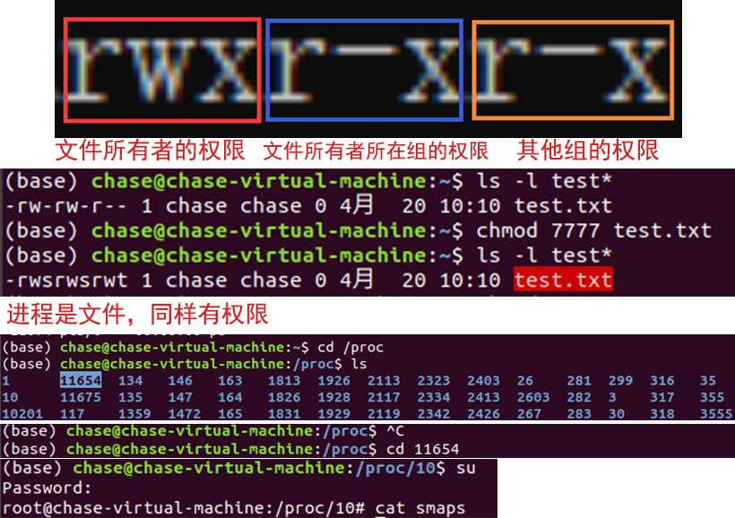
文件所有者的权限：红色方框
文件所有者所在组的权限：蓝色方框
其他组的权限：橙色方框
在linux中，
s指的是“强制位权限”，位于user权限组或group权限组的第三位置。s权限位是一个敏感的权限位，容易造成系统的安全问题。如果在user权限组中设置了s位，则当文件被执行时，该文件是以文件所有者uid而不是用户uid执行程序；如果在group权限组中设置了s位，当文件被执行时，该文件是以文件所有者gid而不是用户gid执行程序。
注意：
- root例外，其拥有全部权限
- 对进程也是有效的【
/proc】，对内存也是有效的【某一个进程下的内存】 - 【Linux下一切都是文件，进程、内存、网络……】
3.4.2 Linux权限控制函数
获取用户识别码
1 | //头文件： |
其中，上面的函数返回值 uid_t 为整数类型
0：root 最高权限【没有<1000】；[1000~10000)：system、数据库、服务、tty、保留的用户；【Linux、Unbuntu等】≥10000：其他用户【如Andriod每个应用会分配一个用户 ，但系统应用例外；网络用户】
获取组识别码
1 | //取得有效的组识别码：【程序启动时】 |
示例：
1 |
|
设置识别码【以下的内容需要对应的权限】
| 真实用户高权限【程序运行时】 | 有效用户高权限【程序启动时】 | 可以提权 |
|---|---|---|
| 真实用户高权限 | 有效用户低权限 | 可以提权 |
| 真实用户低权限 | 有效用户高权限 | 可以提权 |
| 真实用户低权限 | 有效用户低权限 | 不可提权 |
- 权限不足，无法产生效果【权限不足，操作失败返回
-1；操作成功返回0】 - 提权需要该文件属于高级别的用户或者用户组，即有效用户有更高的权限，或者以更高权限的用户来执行
1 | //设置真实的用户识别码： |
创建会话
【用于守护进程】在bash中执行的命令【如服务、sleep休眠等】，此类进程会随着bash解释器的关闭而直接终止。此时若使用守护进程，即可维持进程在后台运行。
1 | // 守护进程的关键调用函数【创建新会话】 |
注意：守护进程的ID至少小于1000，故用户和组要有足够的权限。如何获取权限：
- 以高权限用户来启动
- 有能力提权【设置识别码】
创建新会话：当前进程只能是子进程才能够调用成功【失败返回-1】
1 | void lession23() |
3.6进程控制函数详解
3.5 I/O函数
I/O ： Input/Output【输入/输出 | 写入/读取，即与文件有很大的关系】【主要用于设备读写】
3.5.1 open/create函数
1 | //头文件 |
参数说明：
flags：多个标志用|符号连接【前三者必须三选一】【后两个可与前三组合使用】- O_RDONLY：只读打开【默认】
- O_WRONLY：只写打开
- O_RDWR：读，写打开
O_CREAT：若文件不存在，则创建它，需要使用mode选项。来指明新文件的访问权O_APPEND：追加写，如果文件已经有内容，这次打开文件所写的数据附加到文件的末尾而不覆盖原来的内容【不能与只读O_RDONLY搭配】
mode：多个标志用|符号连接S_IRUSR S_IWUSR S_IXUSR：所有者的读写执行 UserS_IRGRP S_IWGRP S_IXGRP：所属组的读写执行 GroupS_IROTH S_IWOTH S_IXOTH：其他用户的读写执行 Other
1 | //创建一个不存在的文件：【等价于flag=O_CREAT】【灵活度低】 |
3.5.2 文件操作
文件的最主要的操作：打开【3.5.1】、读取、写入、关闭
1 | //头文件 |
写入与关闭：
1 | //从打开的文件写入文件数据 |
3.5.3 其他文件操作
- 输出重定向
- 文件重定向
- 文件同步
1 | //复制文件描述符：【输出重定向】 |
- 文件读写位置修改
- 临时文件
1 | //头文件 |
文件锁操作
- 防止文件被篡改导致冲突
- 防止程序多实例，要用到
LOCK_NB标志来添加锁定 - 多个程序竞争文件控制权【消息分发、文件处理】
1 | //头文件 |
注意：文件锁只是标志，并不能阻止相应的文件操作【即关注时有用，不关注时无效】
3.5.4 文件控制
文件控制
control=cntl。文件操作：打开、关闭、读取、写入、控制
1 | //头文件 |
cmd参数说明：
F_DUPFD：用来查找大于或等于参数arg的最小且仍未使用的文件描述符，并且复制参数fd的文件描述符。执行成功则返回新复制的文件描述符。新描述符与fd共享同一文件表项，但是新描述符有它自己的一套文件描述符标志，其中FD_CLOEXEC文件描述符标志被清除。请参考dup2()。F_GETFD：取得close-on-exec标志。若此标志的FD_CLOEXEC位为0，代表在调用exec()【进程控制函数】相关函数时文件将不会关闭。【管道】F_SETFD：设置close-on-exec 标志。该标志以参数arg 的FD_CLOEXEC位决定。F_GETFL【FL=Flags】：取得文件描述符状态标志，此标志为open（）的参数flags。F_SETFL：设置文件描述符状态标志，参数arg为新标志，但只允许O_APPEND、O_NONBLOCK【非阻塞通信】和O_ASYNC【异步通信】位的改变，其他位的改变将不受影响。F_GETLK【LK=Lock】：取得文件锁定的状态。F_SETLK：设置文件锁定的状态。此时flcok 结构的l_type 值必须是F_RDLCK、F_WRLCK或F_UNLCK。如果无法建立锁定，则返回-1，错误代码为EACCES 或EAGAIN。F_SETLKW【wait】F_SETLK作用相同，但是无法建立锁定时，此调用会一直等到锁定动作成功为止。若在等待锁定的过程中被信号中断时，会立即返回-1，错误代码为EINTR。
3.5.5 练习
理解文件锁
1 |
|
3.6 进程控制函数
进程是操作系统调度的一个最小的单位；线程是xxxx
3.6.1 执行文件
l：进程执行的参数arg，以可变参数的形式给出的【arg参数以NULL为最后一个参数，即最后一个参数必须为空指针】p：进程函数会将当前的PATH作为一个参考环境变量【即file可以是相对路径】e：进程函数会需要用户来设置这个环境变量【env】v：进程函数会用参数数组来传递argv，数组的最后一个成员必须是NULL
1 |
|
3.6.2 建立新进程
1 | pid_t fork(void); |
示例：
虚拟机中对应执行文件：
chase@chase-virtual-machine:/home/xin/Liunx_consoleApplication/bin/x64/Debug$:./Liunx_consoleApplication.out
1 |
|
3.6.3 结束进程
1 | //以异常方式结束进程：【异常退出：不会触发atexit或者on_exit】 |
示例：
1 |
|
3.6.4 改变进程流程【恢复进程】
x86架构下的指令寄存器是IP【eax-edx】；ARM架构下的指令寄存器是PC【R0-R16】
程序执行的中最重要的两个：CPU中的寄存器信息、内存中的堆栈信息
1 | //头文件: |
示例：
当程序执行时，如果发生异常错误【如段错误】，
setjmp就会返回其他的值，此时需要longjmp来恢复寄存器和堆栈环境。在下面的代码中，首先
setjmp保存堆栈环境，返回ret必然等于0。如果执行test001，再执行test002发现出现问题，就使用longjmp恢复堆栈环境，即恢复到setjmp执行时【即指令寄存器也被修改为指向setjmp的下一条指令，也就说跳转程序执行进度】，并将setjmp的返回值ret更改【此时就能执行相应的异常处理程序】而
signal函数【与setjmp-longjmp搭配】，能注册错误信息的处理程序，也可以配合longjmp进行异常捕获和处理。【sigaction与sigsetjmp-siglongjmp搭配】值得注意的是，这种跳转不能用于普通的程序跳转，因为会恢复寄存器，只有存在内存的内容才会保留；此类函数多用于逆向。
1 |
|
获取进程信息：【多用于逆向父子调试】
1 | //取得进程组识别码： |
设置进程信息：【降低权限可以，但提高权限必须要足够的权限】
1 | //设置进程组识别码： |
示例：
1 |
|
3.6.5 Wait等待
- system
- wait / waitpid
1 | <stdlib.h> |
示例：
1 |
|
3.7 文件和目录函数
3.5节IO函数为Linux的文件模型；而此节为真正的文件和目录
3.7.1 文件指针操作
1 | //打开文件： |
示例：
1 |
|
3.7.2 文件内容操作
① 读操作：
1 | //从文件流读取数据：【柱头、盘片、扇区】 |
示例：
1 |
|
② 写入字符与字符串：
读一个字符后，文件内指针移动；当再写一个字符时，从上次读的下一个位置直接覆盖写
1 | //将一指定字符写入文件流中： |
示例：
1 |
|
③ 标准写入：
1 | //将数据写至文件流： |
示例：
1 |
|
3.7.3 文件内指针操作
获取和设置文件内指针
1 | //取得文件流的读取位置： |
示例：
1 |
|
3.7.4 文件流标志
1 | //检查文件流是否读到了文件尾： |
示例：
1 |
|
3.7.5 目录操作
- 创建/删除目录
- 修改文件/目录所有者或权限，以及关于链接文件
- 目录操作函数
1 | //<sys/types.h> 记录宏常量 |
示例：
1 |
|
修改文件/目录所有者或权限
下面两个接口可以用system函数进行替代
命令：chown 用户.组 目标文件或者文件夹
一般而言，用户和组的代码都一样
比如 root用户它有一个专属的分组，就叫root
比如system用户，对应分组也叫system
比如feng这个用户，对应的分组也叫feng
1 | //修改文件或者目录的用户或者组 |
示例：
1 |
|
目录操作函数
1 | //<sys/types.h>【包含一些宏】 |
示例：
1 |
|
4 网络编程基础
4.1 网络的基本概念
4.1.1 网络的物理结构
数据是如何从一台机器传输到另外一台机器？
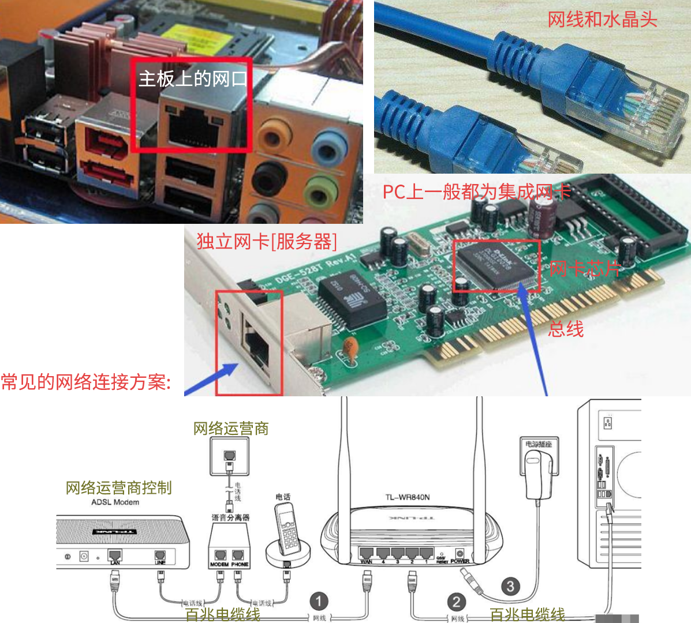
中断接口→操作系统→网络数据接收接口就会有数据
【数据→系统→网卡→路由器→modem】→互联网→【modem→路由器→网卡→系统→接收程序】
光纤千兆网络
需要：千兆光纤线、千兆光纤转接口、工作中的转接口、光纤交换机
4.1.2 网络中的地址(IP)
并不是所有的地址都是可以用的
32位网络地址由四个字节构成【4 x 8，共255 x 255 x 255 x 255 个】
注意：
- 以0开头【第一个字节】的地址，都是不可以用的
- 以0结尾【第四个字节】的地址，表示的是网段，而不是具体的地址
- 224开头到239开头的地址，是组播地址，不可用于点对点的传输【组播可以理解为
tcp/udp上面的广播，可以极大的节约带宽】【问题：容易形成网络风暴】 - 240开头到255开头的地址【实验用，保留，一般不做服务器或者终端地址】
127.0.0.1保留：回环网络的地址【本机网络：往这个地址发任何数据，都会被回发回来】0.0.0.0保留：一般用于服务器监听的，表示全网段监听- 内网保留地址或IPv4专用地址【内网是可以访问互联网的，但需要一台服务器或路由器做网关，通过网关来连接互联网】
- Class A
10.0.0.0 - 10.255.255.255【默认子网掩码：255.0.0.0】 - Class B
172.16.0.0 - 172.31.255.255【默认子网掩码：255.240.0.0】 - Class C
192.168.0.0 - 192.168.255.255【默认子网掩码：255.255.0.0】
- Class A
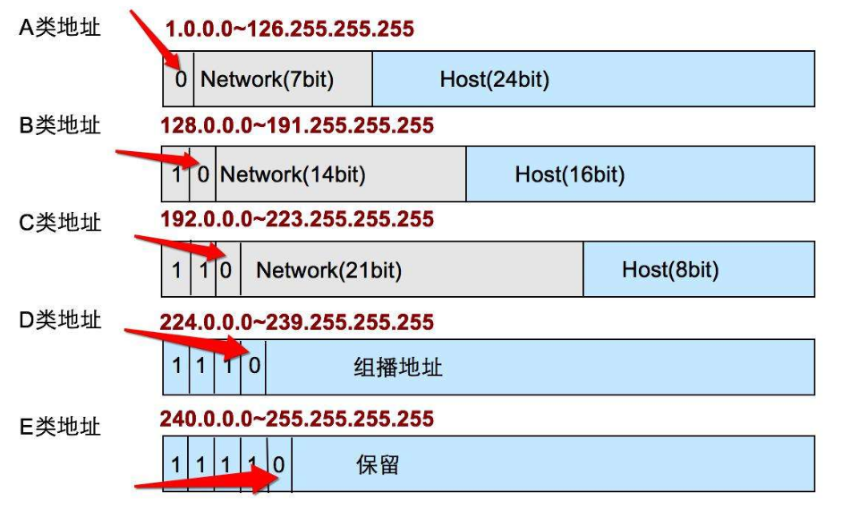
A类【大型网络地址】、B类【中型网络】、C类【常用】用于不同规模的网络；D类用于组播；E类保留，用于实验、私有网络
注意：
- 大型服务器大部分都是有多个地址IP的【用于全网络服务、内外网区别访问】
4.1.3 网络中的端口
公认端口（Well Known Ports）：这类端口也常称之为”常用端口”，如：
- 443：加密https服务
- 22：ssh
- 80：实际上总是HTTP通信所使用
- 23：Telnet服务专用
这类端口的端口号从0到1024，它们紧密绑定于一些特定的服务。通常这些端口的通信明确表明了某种服务的协议，这种端口是不可再重新定义它的作用对象【此类端口通常不会被黑客程序利用】
注册端口（Registered Ports）：端口号从1025到49151。
- 3306：Mysql
它们松散地绑定于一些服务，同时这些端口同样用于许多其他目的。另外，这些端口多数没有明确的定义服务对象，不同程序可根据实际需要自定义，如后面要介绍的远程控制软件和木马程序中都会有这些端口的定义。
记住这些常见的程序端口在木马程序的防护和查杀上是非常有必要的，常见木马所使用的端口在后面将有详细的列表。
动态和私有端口（Dynamic and/or Private Ports）：端口号从49152到65535【不要轻易作为服务器的监听端口，除非确认服务器不会向未知IP发起请求；防火墙等会将此类端口严格管理甚至拒绝】
理论上，不应把常用服务分配在此类端口上。
实际上，有些较为特殊的程序，特别是一些木马程序就非常喜欢用这些端口，因为这些端口常常不被引起注意，容易隐蔽。
端口并非只有服务器才会使用，客户端也一样会使用端口。
4.1.4 什么是协议？
TCP协议包头说明：
TCP/UDP 位于传输层；协议位于第七层应用层
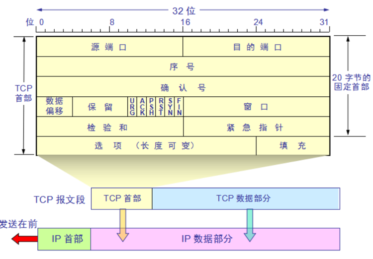
HTTP协议的包头样例：
1 | GET /search/detail?ct=503316480&z=0&ipn=d |
SSH数据包头结构：
1 | struct sshhead |
协议就是一种网络式交互中数据格和交互流程的约定。通过协议，我们可以与远程的设备进行数据交互，请求或者完成对方的服务【协议就是计算机中特定任务的语言、约定】
4.1.5 TCP协议基础
传输控制协议【TCP，Transmission Control Protocol】是一种面向连接的、可靠的、基于字节流的传输层通信协议
可靠的协议：UDP协议是不可靠的协议；TCP协议是可靠的，但是牺牲了性能
基于字节流：可以发1个字节，也可以发1万个字节，以字节为单位，数据是字节流；而http为文本流
交互流程：
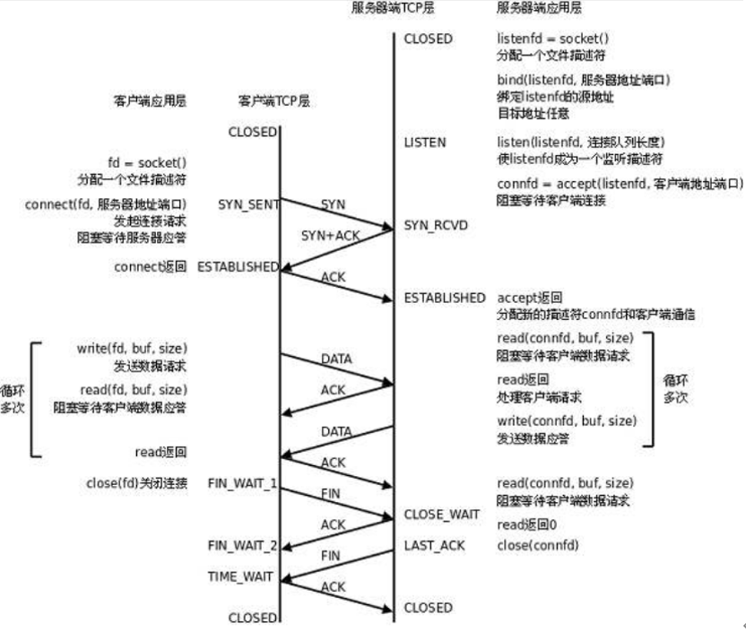
很多时候，只有超时处理才能解决物理连接中断；而默认的超时，可能长达两个小时，这样造成很大的性能损失。
弥补：心跳包的机制，即强制询问双方是否在线。如果终止或者异常连续超过若干次【三次】，则判定物理连接错误。【也常用于提升UDP的可靠性】
4.2 套接字
4.2.1 什么是套接字
网络编程就是编写程序使两台连网的计算机相互交换数据。
两台计算机之间用什么传输数据呢？首先需要物理连接，在此基础上，只需考虑如何编写数据传输软件。
但实际上这也不用愁，因为操作系统会提供名为”套接字”【socket】的部件。套接字是网络数据传输用的软件设备。【即使对网络数据传输原理不太熟悉，我们也能通过套接字完成数据传输。因此，网络编程又称为套接字编程】
那为什么要用”套接字”这个词呢？套接字在英文里面就是“插孔/插座”的意思。
就如同我们要用电，要用到插孔，同样的，对于我们要用网络，那么就要用到socket。
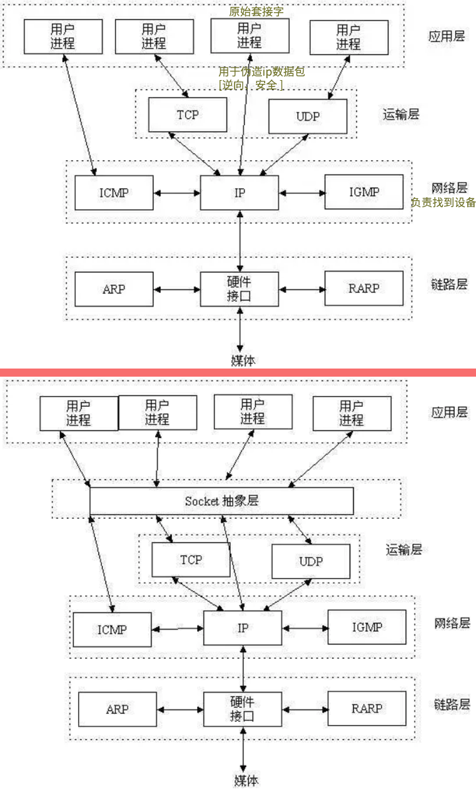
4.2.2 套接字的创建【socket函数】
套接字有很多种，其中用的最多的是TCP和UDP。【考虑到我们现在能用的上的，我们先要讨论的TCP套接字】
TCP套接字可以比喻成电话机。实际上，电话机也是通过固定电话网【telephone network】完成语音数据交换的。打个比方：创建一个套接字就相当于是安装了一部电话机。
1 | //Linux 下的头文件 |
参数一：domain 【Protocol Family】
头文件
sys/socket.h中声明的协议族，下面节选5个【PF与AF有一一对应关系】【Address Family】
| 名称 | 协议族 | 说明 |
|---|---|---|
| PF_INET | IPv4互联网协议族 | 最常用，应掌握 |
| PF_INET6 | IPv6互联网协议族 | |
| PF_LOCAL | 本地通信的UNIX协议族 | |
| PF_PACKET | 底层套接字的协议族 | Socket直接操作IP协议 |
| PF_IPX | IPX Novell互联网协议族 |
参数二：套接字类型：type
套接字类型指的是套接字的数据传输方式，通过socket函数的第二个参数传递，只有这样才能决定创建的套接字的数据传输方式。
为什么已通过第一个参数传递了协议族信息，还要决定数据传输方式？
问题就在于，决定了协议族并不能同时决定数据传输方式。换言之，socket函数第一个参数
PF_INET协议族中也存在多种数据传输方式。
套接字类型1∶面向连接的套接字【SOCK_STREAM】【TCP】
如果向socket函数的第二个参数传递SOCK_STREAM，将创建面向连接的套接字【可靠的、按序传递的、基于字节的面向连接的数据传输方式的套接字】
什么是面向连接呢？数据的传输方式有三个特点：
- 传输的过程数据不会丢失
- 按顺序传输
- 传输的过程中不存在数据边界
数据边界是什么？
举个例子：100个糖果是分批传递的，但接收者凑齐100个后才装袋。再比如：传输数据的计算机通过3次调用write函数传递了100字节的数据，但接收数据的计算机仅通过1次read函数调用就接收了全部100个字节。
收发数据的套接字内部有缓冲（buffer），简言之就是字节数组。通过套接字传输的数据将保存到该数组。因此，收到数据并不意味着马上调用read函数，只要不超过数组容量，则有可能在数据填充满缓冲后通过1次read函数调用读取全部，也有可能分成多次read函数调用进行读取。也就是说，在面向连接的套接字中，read函数和write函数的调用次数并无太大意义。所以说面向连接的套接字不存在数据边界。【更直观的举例，发了三次次两字节的数据，接受的不一定是三组两字节的数据，即没有数据边界】
🔺经典问题：没有数据边界，会导致粘包问题，即无法区分两个包的边界。
解决：自定义包的边界标志
套接字类型2∶面向消息的套接字【SOCK DGRAM】【UDP】
如果向socket函数的第二个参数传递SOCK_DGRAM，则将创建面向消息的套接字。面向消息的套接字可以比喻成高速移动的摩托车快递。数据（包裹）的传输方式有四个特点：
- 强调快速传输而非传输顺序
- 传输的数据可能丢失也可能损毁
- 传输的过程中不存在数据边界
- 限制每次传输的数据大小
面向消息的套接字：不可靠的、不按序传递的、以数据的高速传输为目的的套接字【用于音频/视频】
参数三：protocol 计算机间通信中使用的协议信息
大部分情况下可以向第三个参数传递0，当前两个参数确定之后，自动匹配一个最佳参数。
除非遇到以下这种情况∶【对协议研究较深入时】同一协议族中存在多个数据传输方式相同的协议，即数据传输方式相同，但协议不同。此时需要通过第三个参数具体指定协议信息。
4.2.3 套接字绑定地址和端口【bind函数】
- bind函数及其参数
- 网络字节序与地址变换
1 |
|
如果把套接字比喻为电话，那么目前只安装了电话机。接着就要给电话机分配号码的方法，即使用bind函数给套接字分配 IP地址和端口号。
参数二：存有地址信息的结构体变量地址值【myaddr】
网络地址：
4字节地址族【IPv4：Internet Protocol version 4】
16字节地址族【IPv6：Internet Protocol version 6】
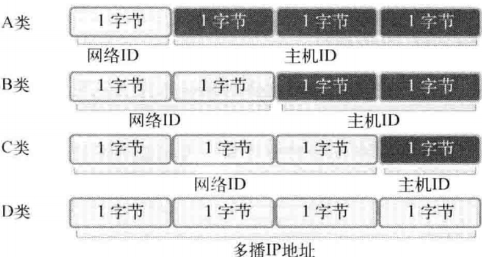
只需通过IP地址的第一个字节即可判断网络地址占用的字节数，因为我们根据IP地址的边界区分网络地址：
A类地址的首字节范围∶0~127 【A类地址的首位以0开始】
B类地址的首字节范围∶128~191 【B类地址的前2位以10开始】
C类地址的首字节范围∶192~223 【C类地址的前3位以110开始】
端口 ：
- IP用于区分计算机，端口用于在同一操作系统内为区分不同套接字而设置的，因此无法将1个端口号分配给不同套接字。
- 另外，端口号由
16位构成，可分配的端口号范围是0-65535。但0-1023是知名端口，一般分配给特定应用程序。 - 虽然端口号不能重复，但TCP套接字和UDP套接字不会共用端口号，所以允许重复。例如：如果某TCP 套接字使用9190号端口，则其他TCP套接字就无法使用该端口号，但UDP套接字可以使用。
总之，数据传输目标地址同时包含IP地址和端口号。只有这样，数据才会被传输到最终的目的应用程序【应用程序套接字】。
1 | //地址信息的表示： |
成员
sin_family— 地址族【Address Family】：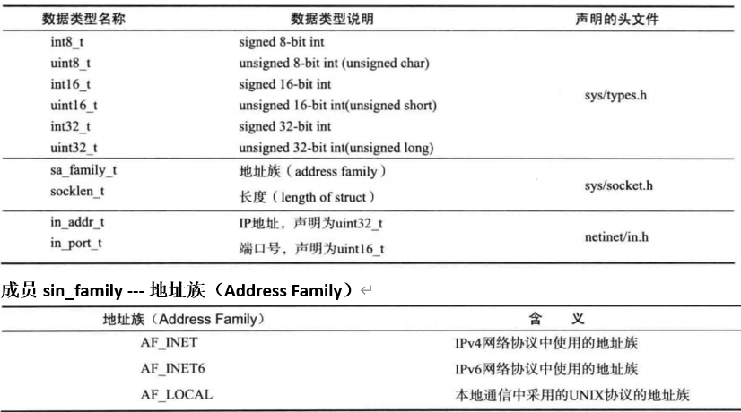
网络字节序与地址变换
大端序【Big Endian】：高位字节存放到低位地址【如
0x1234，先0x34，再0x12】小端序【Little Endian】：高位字节存放到高位地址。
字节序转换：
1 | //通过函数名掌握其功能 |
示例：
bind函数的第二参数是一个结构体指针，设计初衷是C/C++接口编程。由于C不支持函数重载，故只能用这样的形式来兼容C。
1 |
|
4.2.4 listen函数
1 |
|
参数说明：
sock希望进入等待连接请求状态的套接字文件描述符，传递的描述符套接字参数成为服务器端套接字【监听套接字】
backlog为连接请求等待队列【Queue】的长度。若为5，则队列长度为5，表示最多使5个连接请求进入队列【即一瞬间可以同时处理多少连接请求】【≤1ms】
由上图可知，作为listen函数的第一个参数【文件描述符套接字】的用途：
客户端连接请求本身也是从网络中接收到的一种数据，而要想接收就需要套接字。此任务就由服务器端套接字完成，它可以比作是接收连接请求的一名门卫或一扇门。
客户端如果向服务器端询问：“请问我是否可以发起连接？”
服务器端套接字就会亲切应答∶”您好！当然可以，但系统正忙，请到等候室排号等待，准备好后会立即受理您的连接。” 同时将连接请求安排到等候室。
- 调用
listen函数即可生成这种门卫【服务器端套接字】 listen函数的第二个参数决定了等候室的大小- 等候室称为连接请求等待队列。准备好服务器端套接字和连接请求等待队列后，这种可接收连接请求的状态称为等待连接请求状态
listen函数的第二个参数值与服务器端的特性有关，像频繁接收请求的Web服务器端至少应为15【另外，连接请求队列的大小始终根据实验结果而定】。
4.2.5 accept函数
1 |
|
参数说明：
sock：服务器套接字的文件描述符addr：保存发起连接请求的客户端地址信息的变量地址值，调用函数后向传递来的地址变量参数填充客户端地址信息【因为存在伪造的可能，故仅供参考】addrlen：第二个参数结构体的长度，但是存有长度的变量地址。函数调用完成后，该变量即被填客户端地址长度。
调用
listen函数后，若有新的连接请求，则应按序受理。如果在与客户端的数据交换中使用门卫，那谁来守门呢？因此需要另外一个套接字，但没必要亲自创建。此时accept应运而生。
accept 函数受理连接请求等待队列中待处理的客户端连接请求。函数调用成功时，accept函数内部将产生用于数据I/O的套接字，并返回其文件描述符。套接字是自动创建的，并自动与发起连接请求的客户端建立连接【上图展示了accept函数调用过程】
4.3 TCP编程
4.3.1 TCP/IP协议栈
为什么要理解协议栈？学习C/C++就是要懂底层的原理，否则永远都是调包侠。
根据数据传输方式的不同，基于网络协议【TCP/IP协议】的套接字一般分为TCP套接字和UDP套接字。因为TCP套接字是面向连接的，因此又称基于流【stream】的套接字。
TCP是Transmission Control Protocol【传输控制协议】的简写，意为”对数据传输过程的控制”，即可靠的连接。
第一层次：数据链路层
如上图所示：链路层是物理链接领域标准化的结果，也是最基本的领域。专门定义LAN、WAN、MAN等网络标准。若两台主机通过网络进行数据交换，则需要上图所示的物理连接，链路层就负责这些标准。
第二层次：IP层
准备好物理连接后就要传输数据。为了在复杂的网络中传输数据，首先需要考虑路径的选择。
向目标传输数据需要经过哪条路径？解决此问题就是IP层，该层使用的协议就是IP协议，解决数据包“从哪儿来-到哪儿去”的问题。
IP是面向消息的、不可靠的协议。每次传输数据时会帮我们选择路径，但并不一致。如果传输中发生路径错误，则选择其他路径；但如果发生数据丢失或错误，则无法解决。换言之，IP协议是无法应对数据错误的。因此，错误处理又要下放一层。
第三层次：TCP/UDP层
IP层解决数据传输中的路径选择问题，只需照此路径传输数据即可。TCP和UDP层以IP层提供的路径信息为基础完成实际的数据传输，故该层又称传输层（Transport）。
IP层只关注1个数据包（数据传输的基本单位）的传输过程。因此，即使传输多个数据包，每个数据包也是由IP层实际传输的，也就是说传输顺序及传输本身是不可靠的。若只利用IP层传输数据，则有可能导致后传输的数据包B比先传输的数据包A提早到达。另外，传输的数据包A、B、C中有可能只收到A和C，甚至收到的C可能已损毁。
若添加TCP协议则按照下图的对话方式进行数据交换。
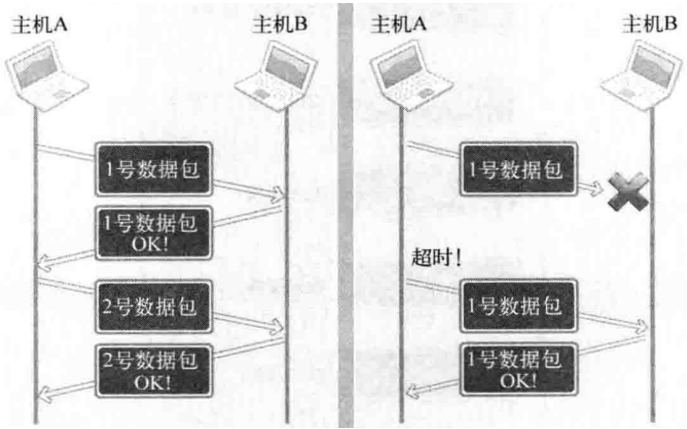
第四层次：应用层
为了使程序员从这些细节中解放出来，前面三个层次中的【选择数据传输路径、数据确认过程】都被隐藏到套接字内部，并自动处理。也就是说，前面三个层次都是为了给应用层提供服务。
4.3.2 TCP服务端
最原始最简单的服务器模型：【收发一次数据】
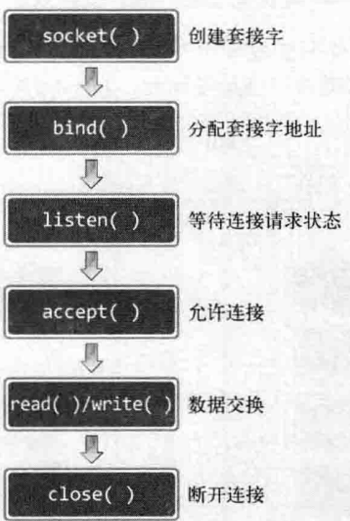
1 |
|
会卡在
accept函数，因为只有client请求之后，aceept才会返回；否则一直阻塞。
4.3.3 connect函数
1 |
|
思考：客户端套接字地址信息在哪儿？
实现服务器端必经过程之一就是给套接字分配IP和端口号。但客户端实现过程中并未出现套接字地址分配，而是创建套接字后立即调用conect函数。难道客户端套接字无需分配IP和端口？【答案当然不是！】
网络数据交换必须分配IP和端口。既然如此，那客户端套接字何时、何地、如何分配地址呢?
- 何时? 调用connect函数时。
- 何地? 操作系统，更准确地说是在内核中。
- 如何? IP用计算机【主机】的IP、端口随机。
客户端的IP地址和端口在调用connect函数时自动分配，无需调用标记的bind函数进行分配。这就是与服务端的不同。
4.3.4 TCP客户端
基于TCP服务端/客户端的函数调用关系：【须在listen之后、close之前进行connect】
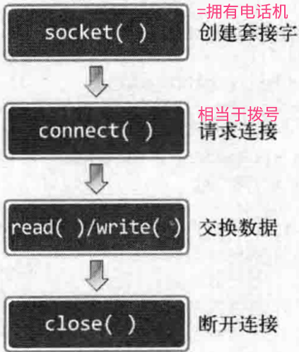
客户端代码实现：
1 |
|
- 如何同时运行服务器和客户端：【进程控制：fork函数】
- 可以使用TCP进行多进程间通信
1 #include <stdio.h>
2 #include <stdlib.h>
3 #include <string.h>
4 #include <unistd.h>
5 #include <arpa/inet.h>
6 #include <sys/socket.h>
7
8 void error_handling(char *message);
9
10 int main(int argc, char* argv[])
11 {
12 int sock;
13 struct sockaddr_in serv_addr;
14 char message[30];
15 int str_len;
16
17 if(argc!=3){
18 printf(“Usage : %s
19 exit(1);
20 }
21
22 sock=socket(PF_INET, SOCK_STREAM, 0);
23 if(sock == -1)
24 error_handling(“socket() error”);
25
26 memset(&serv_addr, 0, sizeof(serv_addr));
27 serv_addr.sin_family=AF_INET;
28 serv_addr.sin_addr.s_addr=inet_addr(argv[1]);
29 serv_addr.sin_port=htons(atoi(argv[2]));
30
31 if(connect(sock, (struct sockaddr*)&serv_addr, sizeof(serv_addr))==-1)
32 error_handling(“connect() error!”);
33
34 str_len=read(sock, message, sizeof(message)-1);
35 if(str_len==-1)
36 error_handling(“read() error!”);
37
38 printf(“Message from server: %s \n”, message);
39 close(sock);
40 return 0;
41 }
42
43 void error_handling(char *message)
44 {
45 fputs(message, stderr);
46 fputc(‘\n’, stderr);
47 exit(1);
48 }
代码详解：
第22行∶创建准备连接服务器端的套接字，此时创建的是TCP**套接字**。
第26~29行∶结构体变量serv_addr中初始化IP和端口信息。初始化值为目标服务器端套接字的IP和端口信息。
第31行∶调用connect函数向服务器端发送连接请求。
第34行∶完成连接后，接收服务器端传输的数据。
第39行∶接收数据后调用close函数关闭套接字，结束与服务器端的连接。
4.4 实现迭代服务器/客户端
4.4.1 迭代服务器
前面的普通服务器的缺点：启动一次服务程序，只能给一个客户端服务
迭代服务器比较原始，它的原型可以描述成：
1 | while(1) |
也就是说，这个程序是一个一个处理各个客户端发来的连接的。比如一个客户端发来一个连接，那么只要它还没有完成自己的任务，那么它就一直会占用服务器的进程直到处理完毕后服务器关闭掉这个socket【即可以循环服务多个客户端】
1 |
|
运行结果：
1 | (base) chase@chase-virtual-machine:~/Linux_consoleApplication/bin/x64/Debug$ ./Linux_consoleApplication.out |
4.4.2 回声服务器实现
回声服务器：将从客户端收到的数据原样返回给客户端，即回声。改进点如下：
client客户端加入输入输出交互：fgets、fputs服务端
accept仅2次，每次accept进行无限次回声服务子进程调用服务器，父【主】进程调用客户端
代码实现：
1 |
|
注意：当服务器端出错，如果直接close服务器，那么主进程中的两次client循环自动终止【即第二次connect时服务器已终止】
4.4.3 回声服务器存在的问题
1 | write(sock, message,strlen(message)); |
以上代码有个错误假设∶”每次调用read、write函数时都会以字符串为单位执行实际的I/O操作。”【Input输入：外部设备到内存；Output输出：内存到外部设备】
当然，每次调用write函数都会传递1个字符串，因此这种假设在某种程度上也算合理。但是我们之前讲过：TCP不存在数据边界吗?
上述客户端是基于TCP的。因此，多次调用write函数传递的字符串有可能一次性传递到服务器端。此时客户端有可能从服务器端收到多个字符串，这不是我们希望看到的结果。还需考虑服务器端的如下情况∶
- 字符串太长，需要分2个数据包发送！
此时，我们的回声服务器端/客户端给出的结果是正确的。但这只是运气好罢了！只是因为收发的数据小，而且运行环境为同一台计算机或相邻的两台计算机，所以没发生错误，可实际上仍存在发生错误的可能。
完美解决回声服务器存在的问题：【多次读写缓冲区】
1 |
|
4.4.4 回声服务器实战：计算器的网络实现
需求【CS架构】：
- 客户端连接到服务器端后，以1字节整数形式传递待算数字个数【
0~255】【应该≥2】 - 客户端向服务器端传递的每个整数型数据占用4字节
- 传递整数型数据后接着传递运算符【运算符信息占用1字节，
+ | - | *之一，即该运算只用一种运算符】 - 服务器端以4字节整数型向客户端传回运算结果
- 客户端得到运算结果后终止与服务器端的连接
客户端实现：
1 |
|
服务端：
1 | int calculator(unsigned count, int oprand[], char op) |
注意：
- fgets获取字符串
- scanf获取字符和数字
fgetc(stdin);换行符结束输入，消除换行符
4.5 TCP底层原理
4.5.1 TCP套接字的I/O缓冲
我们知道，TCP套接字的数据收发无边界【即并非每次发5字节，就会收5字节；服务器端即使调用1次write函数传输40字节的数据，客户端也有可能通过4次read函数调用每次读取10字节】【在上节的代码中，客户端将参数收集到buffer缓冲区后，只进行了一次写操作；而服务端分多次read读取参数，最后写一次】
但此处也有一些疑问，服务器端一次性传输了40字节，而客户端居然可以缓慢地分批接收。客户端接收10字节后，剩下的30字节在何处等候呢？是不是像飞机为等待着陆而在空中盘旋一样，剩下30字节也在网络中徘徊并等待接收呢?
实际上，write函数调用后并非立即传输数据，read函数调用后也并非马上接收数据。更准确地说，如下图所示，write函数调用瞬间，数据将移至输出缓冲；read函数调用瞬间，从输人缓冲读取数据。
调用write函数时，数据将移到输出缓冲，在适当的时候【不管是分别传送还是一次性传送】传向对方的输入缓冲，这时对方将调用read函数从输入缓冲读取数据。这些I/O 缓冲特性可整理如下:
- I/O缓冲在每个TCP套接字中单独存在
- I/O缓冲在创建套接字时自动生成
- 即使关闭套接字也会继续传递输出缓冲中遗留的数据
- 关闭套接字将丢失输入缓冲中的数据。
那么，下面这种情况会引发什么后果?【理解了I/O缓冲后，其流程∶】
“客户端输入缓冲为50字节，而服务器端传输了100字节。”
这的确是个问题。输入缓冲只有50字节，却收到了100字节的数据。可以提出如下解决方案∶
填满输入缓冲前迅速调用read函数读取数据，这样会腾出一部分空间，问题就解决了。其实，根本不会发生这类问题，因为TCP会控制数据流。
TCP中有滑动窗口【Sliding Window】协议，用对话方式呈现如下：
套接字A∶”你好，最多可以向我传递50字节。”
套接字B∶”OK!”
套接字A∶”我腾出了20字节的空间，最多可以收70字节。
套接字B∶”OK!”
数据收发也是如此，因此TCP中不会因为缓冲溢出而丢失数据；但是会因为缓冲而影响传输效率。
4.5.2 TCP的内部原理
TCP通信三大步骤：
三次握手建立连接
开始通信，进行数据交换
四次挥手断开连接
4.5.3 TCP三次握手
【第一次握手】套接字A∶”你好，套接字B。我这儿有数据要传给你，建立连接吧。”
【第二次握手】套接字B∶”好的，我这边已就绪。”【一般A是客户端，B是服务端】
【第三次握手】套接字A∶”谢谢你受理我的请求。”
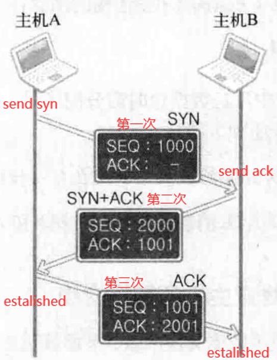
有一种网络攻击，两次握手之后直接结束，而服务器一直等待第三地握手
【①】首先，请求连接的主机A向主机B传递如下信息∶
1 | [SYN] SEQ:1000, ACK: - |
该消息中SEQ为1000，ACK为空，而SEQ为1000的含义∶”现传递的数据包序号为1000，如果接收无误，请通知我向您传递1001号数据包。”
这是首次请求连接时使用的消息，又称SYN。SYN是
Synchronization的简写，表示收发数据前传输的同步消息。
【②】接下来主机B向A传递如下消息∶
1 | [SYN + ACK] SEQ:2000, ACK:1001 |
此时SEQ为2000，ACK为1001，而SEQ为2000的含义∶”现传递的数据包序号为2000如果接收无误，请通知我向您传递2001号数据包。”
而ACK1001的含义∶”刚才传输的SEQ为1000的数据包接收无误，现在请传递SEQ为1001的数据包。”
对主机A首次传输的数据包的确认消息（ACK1001）和为主机B传输数据做准备的同步消息（SEQ2000）捆绑发送，因此，此种类型的消息又称
SYN+ACK。收发数据前向数据包分配序号【
SEQ】，并向对方通报此序号，这都是为防止数据丢失所做的准备。通过向数据包分配序号并确认，可以在数据丢失时马上查看并重传丢失的数据包。因此，TCP可以保证可靠的数据传输。
【③】最后观察主机A向主机B传输的消息∶
1 | [ACK] SEQ:1001, ACK:2001 |
TCP连接过程中发送数据包时需分配序号。在之前的序号1000的基础上加1，也就是分配1001。此时该数据包传递如下消息∶”已正确收到传输的SEQ为2000的数据包，现在可以传输SEQ为2001的数据包。”
这样就传输了添加ACK 2001的ACK消息。至此，主机A和主机B确认了彼此均就绪。
通俗易懂的另类理解：
TCP 三次握手好比在一个夜高风黑的夜晚，你一个人在小区里散步，不远处看见小区里的一位漂亮妹子迎面而来，但是因为路灯有点暗等原因不能100%确认，所以要通过招手的方式来确定对方是否认识自己：
- 你首先向妹子招手【SYN】，妹子看到你向自己招手后，向你点了点头挤出了一个微笑【ACK】。你看到妹子微笑后确认了妹子成功辨认出了自己
- 但是妹子有点不好意思，向四周看了一看，有没有可能你是在看别人呢，她也需要确认一下。妹子也向你招了招手【SYN】，你看到妹子向自己招手后知道对方是在寻求自己的确认，于是也点了点头挤出了微笑【ACK】，妹子看到对方的微笑后确认了你就是在向自己打招呼【进入established状态】
总结一下，这个过程中总共有四个动作：
- 你招手
- 妹子点头微笑
- 妹子招手
- 你点头微笑
这不是四次握手吗？为什么是三次？？
答案：2+3 动作是两个动作的合并
你招手【SYN】
妹子点头微笑并向你招手【SYN+ACK】
你点头微笑【ACK】
于是确定了你和妹纸之间可以进行拥抱，而我们就来到TCP通信的第二步了！
4.5.4 TCP数据传输
TCP 数据传输就是两个人隔空交流，有一定的距离，需要对方反复确认听见了自己的话。
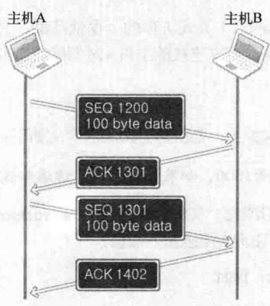
你喊了一句话【SEQ】，妹子听见了之后要向你回复自己听见了【ACK】
如果你喊了一句，半天没听到妹子回复，你会很低落，好比谈恋爱的时候，你满腔热情，而妹子忽冷忽热，所以你锲而不舍，一次不行，就两次，两次不行就三次，这就是TCP重传。既然会重传，妹子就有可能同一句话听见了两次，这就是去重。
重传和去重这两项工作，操作系统的网络内核模块都已经帮我们处理好了！
完事之后，妹纸和你要依依不舍地分开了，那么就要分手了
也就是来到了TCP通信的第三步了
4.5.5 TCP四次挥手
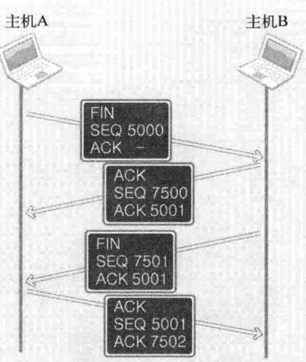
主动发起发要等待两次服务端的应答，此时就很有可能卡在这一步。实际情况中，局域网内的时延为30ms以内，累加之后依然是不可接受的时延。故在开发中，需要将等待任务交给一个新线程去执行【即本线程不做挥手下线任务】
挥手过程：
套接字A∶”我希望断开连接。”
套接字B∶”哦，是吗?请稍候。”
套接字B∶”我也准备就绪，可以断开连接。”
套接字A∶”好的，谢谢合作。”
翻译为生活场景就是：
我：”对不起，我妈叫我回家了，我想分开了。”
妹纸：”好的，请稍后，我给我妈打个电话，确定一下能不能回家。”
妹纸：”我确定好了，可以回家，分开吧。”
我：”好的，分开吧，分手快乐。”
关于TCP的各种状态，在高级课程里介绍
4.6 UDP编程
4.6.1 UDP基本原理
在四层TCP/IP模型中，第二层传输层【Transport】分为TCP和UDP两种。数据交换过程可以分为：
- 通过
TCP套接字完成的TCP方式 - 通过
UDP套接字完成的UDP方式【用户数据报协议，User Datagram Protocol】
UDP套接字的特点：
- UDP 是无连接的，即发送数据之前不需要建立连接(发送数据结束时也没有连接可释放)，减少了开销和发送数据之前的时延
- UDP 使用尽最大努力交付，即不保证可靠交付，主机不需要维持复杂的连接状态表
- UDP 是面向报文的，发送方的 UDP 对应用程序交下来的报文，在添加首部后就向下交付 IP 层。UDP 对应用层交下来的报文，既不合并，也不拆分，而是保留这些报文的边界
- UDP 没有拥塞控制，网络出现的拥塞不会使源主机的发送速率降低。这对某些实时应用是很重要的
- UDP 支持一对一、一对多、多对一和多对多的交互通信
- UDP 的首部开销小，只有8个字节，比 TCP 的20个字节的首部要短
我们可以通过信件说明UDP的工作原理，这是讲解UDP时使用的传统示例，它与UDP特性完全相符。
寄信前应先在信封上填好寄信人和收信人的地址，之后贴上邮票放进邮筒即可。
信件的特点使我们无法确认对方是否收到
另外，邮寄过程中也可能发生信件丢失的情况
也就是说，信件是一种不可靠的传输方式。与之类似，UDP提供的同样是不可靠的数据传输服务。
引入问题：既然如此，TCP应该是更优质的协议吧？
答：如果只考虑可靠性，TCP的确比UDP好；但UDP在结构上比TCP更简洁，即性能更快。
- UDP不会发送类似
ACK的应答消息，也不会像SEQ那样给数据包分配序号。因此，UDP的性能有时比TCP高出很多。 - 编程中实现UDP也比TCP简单。
- 另外，UDP的可靠性虽比不上TCP，但也不会像想象中那么频繁地发生数据损毁。因此，在更重视性能而非可靠性的情况下，UDP是一种很好的选择。
既然如此，UDP的作用到底是什么呢?为了提供可靠的数据传输服务，TCP在不可靠的IP层进行流控制，而UDP就缺少这种流控制机制。
流控制是区分UDP和TCP的最重要的标志。但若从TCP中除去流控制，所剩内容也屈指可数。也就是说，TCP的生命在于流控制。
引入问题：如何将TCP与UDP的优势结合起来？
如果把TCP比喻为电话，把 UDP比喻为信件。
但这只是形容协议工作方式，并没有包含数据交换速率。请不要误认为【电话的速度比信件快，因此TCP 的数据收发速率也比 UDP快】。
实际上正好相反。TCP的速度无法超过UDP，但在收发某些类型的数据时有可能接近 UDP。例如，每次交换的数据量越大，TCP的传输速率就越接近 UDP的传输速率。
从上图可以看出，IP的作用就是让离开主机B的UDP数据包准确传递到主机A。但把UDP包最终交给主机A的某一个UDP套接字的过程则是由UDP完成的。UDP最重要的作用就是根据端口号将传到主机的数据包交付给最终的UDP套接字。
其实，在实际的应用场景中，UDP也具有一定的可靠性。网络传输特性导致信息丢失频发，可若要传递压缩文件【发送1万个数据包时，只要丢失1个就会产生问题】，则必须使用TCP，因为压缩文件只要丢失一部分就很难解压。但通过网络实时传输视频或音频时的情况有所不同。对于多媒体数据而言，丢失一部分也没有太大问题，这只会引起短暂的画面抖动，或出现细微的杂音。但因为需要提供实时服务，速度就成为非常重要的因素，此时需要考虑使用UDP【此时，可以同时使用TCP进行流量监控，比如报告丢包情况以便进行应对】。但UDP并非每次都快于TCP，TCP比UDP慢的原因通常有以下两点：
- 收发数据前后进行的连接设置及清除过程
- 收发数据过程中为保证可靠性而添加的流控制
总之，尤其是收发的数据量小但需要频繁连接时，UDP比TCP更高效。
另外，也可以使用UDP去模拟TCP，但可以一次握手建立连接，简化应答机制。
4.6.2 UDP服务端
UDP中的服务器端和客户端没有连接：
- UDP服务器端/客户端不像TCP那样在连接状态下交换数据，因此与TCP不同，无需经过连接过程
- 也就是说，不必调用TCP连接过程中调用的
listen函数和accept函数 - UDP中只有创建套接字的过程和数据交换过程
UDP服务器端和客户端均只需一个套接字：
TCP中，套接字之间应该是一对一的关系，即若要向10个客户端提供服务，则除了守门的服务器套接字外，还需要10个服务器端套接字。但在UDP中，不管是服务器端还是客户端都只需要1个套接字。
之前解释UDP原理时举了信件的例子，收发信件时使用的邮筒可以比喻为UDP套接字。只要附近有1个邮筒，就可以通过它向任意地址寄出信件。同样，只需1个UDP套接字就可以向任意主机传输数据。
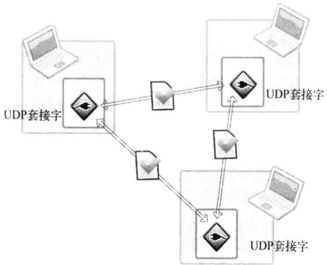
上图展示了1个UDP套接字与两个不同主机交换数据的过程。也就是说，只需1个UDP套接字就能和多台主机通信。【视频会议就是利用UDP的这种特性】
需要注意的是，创建好TCP套接字后，传输数据时无需再添加地址信息【这是因为TCP套接字将保持与对方套接字的连接。换言之，TCP套接字知道目标地址信息】。
但UDP套接字不会保持连接状态【UDP套接字只有简单的邮筒功能】，因此每次传输数据都要添加目标地址信息，这相当于寄信前在信件中填写地址。以下为填写地址并传输数据时调用的UDP相关函数：
1 |
|
上述函数与之前的TCP输出函数最大的区别在于，此函数需要向它传递目标地址信息。
接下来介绍接收UDP数据的函数：
1 |
|
UDP数据的发送端并不固定，因此该函数定义为可接收发送端信息的形式，也就是将同时返回UDP数据包中的发送端信息。
编写UDP程序时最核心的部分就在于上述两个函数，这也说明二者在UDP数据传输中的地位。
UDP是DDOS攻击的主要方式，一个原因是UDP无法拒收。就算屏蔽该IP，也只能UDP数据包到达接收端后，才能知道发送端IP。另一个原因是UDP包中的发送端地址可以伪造。
4.6.3 UDP回声服务器
服务端总结为以下几步：
- 声明变量
- 参数校验
- 创建UDP套接字
- 填写地址
- bind
- 收/发消息
- 关闭套接字
1 | void handle_error(const char* msg) |
注意：
- 如果不执行
close(socket)，一般需要延迟30s才能再次bind。这就是之前实验中为什么总是出现bind failed的原因。 serv_sock=socket(PF_INET, SOCK_DGRAM, 0);创建UDP套接字，向socket函数第二个参数传递SOCK_DGRAMrecvfrom利用分配的地址接收数据，不限制数据传输对象。sendto函数调用同时获取数据传输端的地址，正是利用该地址将接收的数据逆向重传。
4.6.4 UDP客户端
1 | int lesson74_client(int argc, char* argv[]) |
注意：
为什么fork后，主进程开客户端，子进程开服务端？
- d
- 父进程更易于调试
bind failed的绑定错误？见4.7
客户端退出条件是
q\n还是q？【如何调试？】在实际断点调试中，
message为q，故选择后者。【添加断点，可在代码中查看变量值】UDP在
sendto函数中自动分配发送端接受地址和端口；如果先调用recvfrom，即当作服务器用，就必须bind。
4.6.5 UDP的传输特性和调用
上节讲到UDP服务器端/客户端的实现方法。但如果仔细观察UDP客户端会发现，它缺少把IP和端口分配给套接字的过程。
- TCP客户端调用
connect函数自动完成此过程，而UDP中连能承担相同功能的函数调用语句都没有【究竟在何时分配IP和端口号呢?】 - UDP程序中，调用sendto函数传输数据前应完成对套接字的地址分配工作，因此调用
bind函数。
当然，bind函数在TCP程序中出现过，但bind函数不区分TCP和UDP，也就是说，在UDP程序中同样可以调用。
- 另外，如果调用
sendto函数时发现尚未分配地址信息，则在首次调用sendto函数时给相应套接字自动分配IP和端口【IP用主机IP，端口号选尚未使用的任意端口号】【注册端口或动态端口】 - 而且此时分配的地址一直保留到程序结束【关闭套接字之前】为止，因此也可用来与其他UDP套接字进行数据交换。
综上所述，调用sendto函数时自动分配IP和端口号，即UDP客户端中通常无需额外的地址分配过程。
🔺上例中为什么服务器端UDP需要
bind，而客户端不需要bind？答：客户端的
sendto函数自动填充本地地址IP和Port，同时手动添加了目标地址和端口，同时之后的recvform沿用之前的目标地址和端口；而服务端直接recvfrom，其中只有服务端套接字，其他的都是与待接受的UDP数据包有关信息，连本地IP和端口都没有，故需要手动bind。【也就是说，用了
sendto就不需要bind，没用sendto之前要使用recvfrom就必须bind】
4.7 套接字的多种可选项
4.7.1 I/O缓冲大小
我们进行套接字编程时往往只关注数据通信，而忽略了套接字具有的不同特性。但是，理解这些特性并根据实际需要进行更改也十分重要。【默认512K的缓冲区】
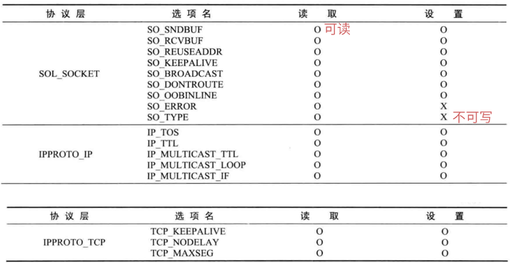
用于验证套接字类型的SO_TYPE是典型的只读可选项，这一点可以通过下面这句话解释∶套接字类型只能在创建时决定，以后不能再更改。
从上表可以看出，套接字可选项是分层的。IPPROTO_IP层可选项是IP协议相关事项，IPPROTO_TCP层可选项是TCP协议相关的事项，SOL_SOCKET层是套接字相关的通用可选项。
确实无需全部背下来或理解，实际能够设置的可选项数量是上表的好几倍，实际开发中逐一掌握即可。
getsockopt & setsockopt 函数【Linux函数，Windows有自己的相应函数】：
我们几乎可以针对上表中的所有可选项进行读取【Get】和设置【Set】【当然，有些可选项只能进行一种操作】。
1 |
|
4.7.2 SO_SNDBUF &SO_RCVBUF
我们知道，创建套接字将同时生成I/O缓冲。SO_RCVBUF是输入缓冲大小相关可选项，SO_SNDBUF是输出缓冲大小相关可选项。用这两个可选项既可以读取当前I/O缓冲大小，也可以进行更改。
通过下列示例读取创建套接字时默认的I/O缓冲大小：
1 |
|
4.7.3 SO_REUSEADDR
发生地址分配错误【Binding Error，即bind函数返回-1】
学习SO_REUSEADDR可选项之前，应理解好Timewait状态。以下面的程序为例：
- 开启两个终端，一个参数为1，即服务端；两一个参数为2，即客户端
- 建立连接，即connect成功后，由服务端使用
CTRL+C主动断开连接 - 再次运行第一步骤，试图建立连接【显示
bind failed】
1 |
|
上面的程序是一个服务器，使用TCP套接字，等待客户端连接。【正常情况下，如果客户端断开连接，则需要经过四次挥手】。但是，如果”在客户端控制台输入
Q消息，或通过CTRL+C终止程序”呢？
也就是说，【方式①】让客户端先通知服务器端终止程序：
- 在客户端控制台输入Q消息时调用
close函数，向服务器端发送FIN消息并经过四次挥手过程。 - 当然，输人
CTRL+C时也会向服务器传递FIN消息【强制终止程序时，由操作系统关闭文件及套接字，此过程相当于调用close函数，也会向服务器端传递FIN消息】
“但看不到什么特殊现象啊?”答案是肯定的，通常都是由客户端先请求断开连接，所以不会发生特别的事情。重新运行服务器端也不成问题，但按照如下方式终止程序时则不同：”【方式②】服务器端和客户端已建立连接的状态下，向服务器端控制台输入CTRL+C，即强制关闭服务器端。”
这主要模拟了服务器端向客户端发送
FIN消息的情景。如果以这种方式终止程序，那服务器端重新运行时将产生问题。如果用同一端口号重新运行服务器端，将输出bind error，并且无法再次运行。【但在这种情况下，再过大约3分钟即可重新运行服务器端】
上述两种运行方式唯一的区别就是：谁先传输FIN消息，但结果却迥然不同，原因何在?
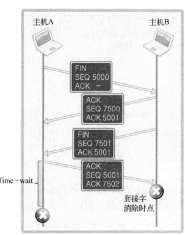
假设上图中主机A是服务器端，因为是主机A向B发送FIN消息，故可以想象成服务器端在控制台输入CTRL+C。但问题是，套接字经过四次挥手过程后并非立即消除，而是要经过一段时间的Time-wait状态。当然，只有先断开连接的【先发送FIN消息的】主机才经过Time-wait状态。因此，有以下结论：
- 若服务器端先断开连接，则无法立即重新运行。
- 套接字处在
Time-wait过程时，相应端口是正在使用的状态。因此，就像之前验证过的，bind函数调用过程中当然会发生错误。 Time-wait在几秒到理论上限两小时不等，
有些人会误以为 Time-wait 过程只存在于服务器端。但实际上，不管是服务器端还是客户端，套接字都会有 Time-wait 过程。先断开连接的套接字必然会经过Time-wait 过程，但无需考虑客户端 Time-wait状态。因为客户端套接字的端口号是任意指定的。【与服务器端不同，客户端每次运行程序时都会动态分配端口号，因此无需过多关注Time-wait状态】【服务端的端口肯定要固定】
到底为什么会有Time-wait状态呢?
如上图中，假设主机A向主机B传输ACK消息【SEQ5001、ACK7502】后立即消除套接字。但最后这条ACK消息在传递途中丢失，未能传给主机B。这时会发生什么？
主机B会认为之前自己发送的FIN消息【SEQ 7501、ACK 5001】未能抵达主机A，继而试图重传。但此时主机A已是完全终止的状态，因此主机B永远无法收到从主机A最后传来的ACK消息。相反，若主机A的套接字处在Time-wait状态，则会向主机B重传最后的ACK消息，主机B也可以正常终止。基于这些考虑，先传输FIN消息的主机应经过Time-wait过程。
Time-wait看似重要，但并不一定讨人喜欢。考虑一下系统发生故障从而紧急停止的情况。这时需要尽快重启服务器端以提供服务，但因处于Time-wait状态而必须等待几分钟。因此，Time-wait并非只有优点，而且有些情况下可能引发更大问题。下图演示了四次握手时不得不延长Time-wait过程的情况：
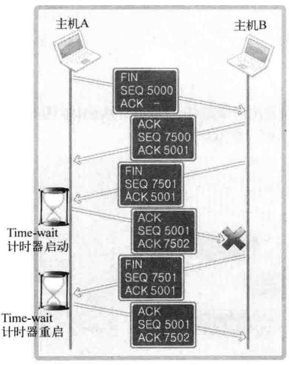
如上图所示，在主机A的四次握手过程中，如果最后的数据丢失，则主机B会认为主机A未能收到自己发送的
FIN消息，因此重传。这时，收到FIN消息的主机A将重启Time-wait计时器。因此，如果网络状况不理想，Time-wait状态将持续。
解决办法：地址再分配
在套接字的可选项中更改为SO_REUSEADDR的状态。适当调整该参数，可将Time-wait状态下的套接字端口号重新分配给新的套接字。SO_REUSEADDR的默认值为0【False】，这就意味着无法分配Time-wait状态下的套接字端口号。因此需要将这个值改成1【True】【再做一次，就能解决上述问题】
1 |
|
4.7.4 TCP_NODELAY
什么是Nagle算法？使用该算法能够获得哪些数据通信特性?
Nagle算法是以发明人John Nagle的名字命名的，它用于自动连接许多的小缓冲器消息。这一过程【称为nagling】通过减少必须发送包的个数来增加网络软件系统的效率。
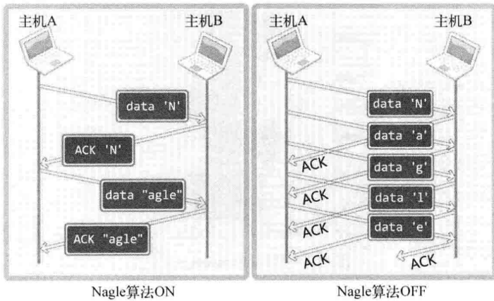
从上图中可以得到如下结论：”只有收到前一数据的ACK消息时，Nagle算法才发送下一数据。”
注意：输入每一个字母是有间隔的，是输入一个字符发一次，还是一起发？
TCP套接字默认使用Nagle算法交换数据，因此最大限度地进行缓冲，直到收到ACK。上图左侧正是这种情况。为了发送字符串”Nagle”，将其传递到输出缓冲。这时头字符”N”之前没有其他数据（没有需接收的ACK），因此立即传输。之后开始等待字符”N”的ACK消息，等待过程中，剩下的”agle”填入输出缓冲。接下来，收到字符”N”的ACK消息后，将输出缓冲的”agle”装入一个数据包发送。也就是说，共需传递4个数据包以传输1个字符串。
接下来分析未使用Nagle算法时发送字符串”Nagle”的过程。假设字符”N”到”e”依序传到输出缓冲。此时的发送过程与ACK接收与否无关，因此数据到达输出缓冲后将立即被发送出去。从上图右侧可以看到，发送字符串”Nagle”时共需10个数据包。由此可知，不使用Nagle算法将对网络流量产生负面影响。即使只传输1个字节的数据，其头信息都有可能是几十个字节。因此，为了提高网络传输效率，必须使用Nagle算法。
在程序中将字符串传给输出缓冲时并不是逐字传递的，故发送字符串”Nagle”的实际情况并非如上图所示。但如果隔一段时间再把构成字符串的字符传到输出缓冲（如果存在此类数据传递）的话，则有可能产生类似上图的情况。上图中就是隔一段时间向输出缓冲传递待发送数据的。
【 缺点】但Nagle算法并不是什么时候都适用。根据传输数据的特性，网络流量未受太大影响时，不使用Nagle算法要比使用它时传输速度快。
最典型的是传输大文件数据。将文件数据传入输出缓冲不会花太多时间，因此，即便不使用Nagle算法，也会在装满输出缓冲时传输数据包。这不仅不会增加数据包的数量，反而会在无需等待ACK的前提下连续传输，因此可以大大提高传输速度。
一般情况下，不使用Nagle算法可以提高传输速度。但如果无条件放弃使用Nagle算法，就会增加过多的网络流量，反而会影响传输。因此，未准确判断数据特性时不应禁用Nagle算法。
刚才说过的【大文件数据】应禁用Nagle算法。换言之，如果有必要，就应禁用Nagle算法。Nagle算法使用与否在网络流量上差别不大，使用Nagle算法的传输速度更慢，禁用方法非常简单。
另外，使用Nagle算法后，会将小包合并成大包，因此也会产生粘包问题。具体表现在：【假如依次3个包，包含json数据，大小依次为60、120、3000，一般前两个包会合并】
- 接受端需要进行协调接受方式，即要明确知道要从一个数据包中拆分为两包进行解析【增加了接收端工作量】
- 合并包会产生时延，导致实时性下降【如果对实时性有要求，需要禁用Nagle】
从下列代码也可看出，只需将套接字可选项TCP_NODELAY改为1【真】即可：
1 | int opt_val=1; |
- 如果正在使用
Nagle算法，optval变量中会保存0 - 如果已禁用
Nagle算法，则保存1 - 何时需要禁用，何时需要打开，需要根据实际情况考量
至此，
socket的相关内容就告一段落，主要还是解析了内部的一些参数和原理，在实际工作中也会用到，面试的时候也会被问到，大家好好掌握。
4.8 Questions
- 序列号SEQ是在三次握手期间确定的，而并非第一次握手确定，因为第一次握手不一定能收到。
5 linux系统编程：进程
到目前为止，大家已对套接字编程有了一定的理解，但要想实现真正的服务器端，只凭这些内容还不够。因此，现在开始学习构建实际网络服务所需内容。
5.1 进程的概念以及应用
利用之前学习到的内容，我们可以构建按序向第一个客户端到第一百个客户端提供服务的服务器端。
当然，第一个客户端不会抱怨服务器端，但如果每个客户端的平均服务时间为0.5秒，则第100个客户端会对服务器端产生相当大的不满。
5.1.1 服务端类型和并发服务器
两种类型的服务端
如果真正为客户端着想，应提高客户端满意度平均标准。如果有下面这种类型的服务器端，应该感到满意了吧？
- “第一个连接请求的受理时间为0秒，第50个连接请求的受理时间为50秒，第100个连接请求的受理时间为100秒！但只要受理，服务只需1秒钟。”【如果排在前面的请求数能用一只手数清，客户端当然会对服务器端感到满意。但只要超过这个数，客户端就会开始抱怨。】
- “所有连接请求的受理时间不超过1秒，但平均服务时间为2~3秒。”【并发服务器】
并发服务器的实现方法：
即使有可能延长服务时间，也有必要改进服务器端，使其同时向所有发起请求的客户端提供服务，以提高平均满意度。而且，网络程序中数据通信时间比CPU运算时间占比更大。因此，向多个客户端提供服务是一种有效利用CPU的方式。
接下来讨论同时向多个客户端提供服务的并发服务器端。下面列出的是具有代表性的并发服务器端实现模型和方法：
多进程服务器∶通过创建多个进程提供服务
多路复用服务器∶通过捆绑并统一管理I/O对象提供服务【与
I/O复用有关】多线程服务器∶通过生成与客户端等量的线程提供服务【与多线程有关】
5.1.2 概念
进程：占用内存空间的正在运行的程序。
- 进程ID为全局可见，线程ID只是进程内可见，除非全局共享该线程
- 内存空间独立，即原则上不允许其他程序访问【除非如调试程序
gdb】【有点线程不占空间，属于进程的一部分】
假如同学们从网上下载了《植物大战僵尸游戏》并安装到硬盘。此时的游戏并非进程，而是程序。因为游戏并未进入运行状态。
接着开始运行程序。此时游戏被加载到主内存并进入运行状态，这时才可称为进程。如果同时运行多个植物大战僵尸游戏程序，则会生成相应数量的进程，也会占用相应进程数的内存空间。
再举个例子。进行文档相关操作，这时应打开文档编辑软件。如果工作的同时还想听音乐，应打开酷狗播放器。另外，为了与朋友聊天，再打开微信软件。此时共创建3个进程。
从操作系统的角度看， 进程是程序流的基本单位。若创建多个进程，则操作系统将同时运行。
有时，一个程序运行过程中也会产生多个进程。接下来要创建的多进程服务器就是其中的代表。编写服务器端前，先了解一下通过程序创建进程的方法【5.1.3】。
CPU核的个数与进程数
拥有2个运算设备的CPU称作双核CPU，拥有4个运算器的CPU 称作4核CPU。也就是说，1个CPU中可能包含多个运算设备【核心】。
核的个数与可同时运行的进程数相同；但若进程数超过核数，进程将分时使用CPU 资源【但因为CPU 运转速度极快，我们会感到所有进程同时运行。当然，核数越多，这种感觉越明显】。
进程ID：
无论进程是如何创建的，所有进程都会从操作系统分配到ID。
- 此
ID称为进程ID，其值为＞2的整数【取值范围：0~32767或65535】 ID=1要分配给操作系统启动后的首个进程【init进程 | 用于协助操作系统】，因此用户进程无法得到ID值1。- 进程ID不连续，因为中间可能会产生各种子进程和线程，可能其中的某些已经死亡；当最后一个进程号32767用完之后，会从头开始找空进程号
通过ps au指令可以查看当前运行的所有进程。特别需要注意的是，该命令同时可以列出PID【进程ID】。通过指定a和u参数列出了所有进程详细信息。
5.1.3 通过fork 函数创建进程
创建进程的方法很多，此处只介绍用于创建多进程服务器端的fork函数【fork函数实际上是通过clone函数发挥作用】
1 |
|
注意：
fork函数将创建调用的进程副本【也就是说，并非根据完全不同的程序创建进程，而是复制正在运行的、调用fork函数的进程】
另外，两个进程都将执行fork函数调用后的语句【准确地说是在fork函数返回后】。但因为通过同一个进程、复制相同的内存空间，之后的程序流要根据fork函数的返回值加以区分。即利用fork函数的如下特点区分程序执行流程：
- 父进程∶fork函数返回子进程
ID>0。 - 子进程∶fork函数返回
0
- 父进程∶fork函数返回子进程
虽然复制了相同的内存空间，如堆、栈等，但之后子进程不可以互相访问父进程的内存空间【但子进程有父进程的副本，故？】
此处”父进程”（Parent Process）指原进程，即调用fork函数的主体，而”子进程”（Child Process）是通过父进程调用fork函数复制出的进程。接下来讲解调用fork函数后的程序运行流程，如下图所示。
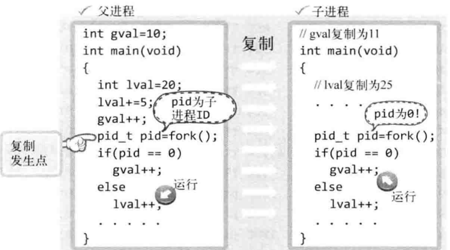
1 |
|
从运行结果可以看出，调用fork函数后，父子进程拥有完全独立的内存结构。
5.2 进程和僵尸进程
文件操作中，关闭文件和打开文件同等重要。同样，进程销毁和进程创建同等重要。如果未认真对待进程销毁，它们将变成僵尸进程困扰大家。
进程完成工作后【执行完main函数中的程序后】应被销毁，但有时这些进程将变成僵尸进程，占用系统中的重要资源【进程号和内存】。这种状态下的进程称作僵尸进程【执行结束后等待父进程的下一步指示】，这也是给系统带来负担的原因之一。
产生僵尸进程的原因：
首先利用如下两个示例，展示调用fork函数产生子进程的终止方式：
- 传递参数并调用exit函数。
- main函数中执行retun语句并返回值。
向exit函数传递的参数值和main函数的returm语句返回的值都会传递给操作系统。而操作系统不会销毁子进程，直到把这些值传递给产生该子进程的父进程。处在这种状态下的进程就是僵尸进程。也就是说，将子进程变成僵尸进程的，正是操作系统。
既然如此，此僵尸进程何时被销毁呢？当操作系统向创建子进程的父进程，传递子进程的exit参数值或return语句的返回值后，才会销毁僵尸进程。【合理性：对某些异常结束的子进程，父进程还可以获取子进程的相关状态，以便于解决相应的问题】【但同时，操作系统不会主动传递这些参数】
如何向父进程传递这些值呢？操作系统不会主动把这些值传递给父进程，只有父进程主动发起请求【函数调用】时，操作系统才会传递该值。换言之，如果父进程未主动要求获得子进程的结束状态值，操作系统将一直保存，并让子进程长时间处于僵尸进程状态【也就是说，父母要负责收回自己生的孩子】。下面我们来创建一个僵尸进程：
1 |
|
查看进程状态：在父进程sleep期间，子进程变成僵尸进程【倒数第四行的Z】【O表示正在运行；S代表正在休眠；R代表运行态；Z代表僵死态；T代表停止】
1 | 4 S 0 5751 1222 0 80 0 - 26947 - ? 00:00:00 sshd |
当父进程休眠结束，主动获取子进程状态waitpid，随即OS销毁子进程。
实际上，服务器需要不停机运行很长时间，如果出现大量僵尸进程，会占用大量系统资源，导致无法创建新进程而系统奔溃。而且，这种奔溃却很难找出原因。
5.3 信号处理
我们已经知道了进程创建及销毁方法，但还有一个问题没解决。
- 子进程究竟何时终止？
- 调用waitpid函数后要无休止地等待吗？
父进程往往与子进程一样繁忙，因此不能只调用
waitpid函数以等待子进程终止
5.3.1 信号处理signal
解决办法：向操作系统求助
子进程终止的识别主体是操作系统，因此，若操作系统能把如下信息告诉正忙于工作的父进程，将有助于构建高效的程序。
【OS】”嘿，父进程！你创建的子进程终止了!”
此时父进程将暂时放下工作，处理子进程终止相关事宜。这就是信号处理机制【Signal Handling】。
- 此处的信号是在特定事件发生时由操作系统向进程发送的消息。
- 另外，为了响应该消息，执行与消息相关的自定义操作的过程称为”信号处理”。
- 理论上有31种信号。
我们想象一下如下场景：
进程∶”嘿，操作系统!如果我之前创建的子进程终止，就帮我调用
zombie_handler函数。”操作系统∶”好的！如果你的子进程终止，我会帮你调用
zombie_handler函数，你先把该函数要执行的语句编！”
上述场景中进程所讲的相当于”注册信号”过程，即进程的子进程结束时，请求操作系统调用特定函数。该请求通过signal函数调用完成【因此，称signal为信号注册函数】。
1 | //注意，signal函数返回值是一个函数指针 |
调用上述函数时，下面给出可以在signal函数中注册的部分特殊情况和对应的常数：
SIGALRM∶已到通过调用alarm函数注册的时间。SIGINT：中断，即输入CTRL+C【Bash条件下的命令行模式下有效】SIGCHLD∶子进程终止- 待补充
举例说明：
1 | //1、"子进程终止则调用`mychild`函数。" |
以上就是信号注册过程。注册好信号处理后，发生注册信号时【注册的情况发生】，操作系统将调用该信号对应的函数。
下面以SIGALRM信号量为例：
- 如果调用
alarm函数的同时向它传递一个正整型参数，相应时间后【以秒为单位】将产生SIGALRM信号。 - 若向该函数传递0，则之前对SIGALRM信号的预约将取消。
- 如果通过该函数预约信号后未指定该信号对应的处理函数，则【通过调用
signal函数】终止进程，不做任何处理。
1 |
|
更间接的统一处理写法：
1 |
|
执行结果如下：
1 | (base) chase@chase-virtual-machine:~/Linux_consoleApplication/bin/x64/Debug$ ./Linux_consoleApplication.out |
注意：
- 主线程和子线程线程号完全一致
- 两个线程交替打印【也就是说，主线程根本没有休眠100s】
- 小结论：信号量会影响休眠
🔺为什么主线程没有休眠100s？
原因：发生SIGALRM信号时，将唤醒由于调用sleep函数而进入阻塞状态的进程【主线程】。
调用函数的主体的确是操作系统，但进程处于睡眠状态时无法调用函数。因此，产生信号时，为了调用信号处理器，将唤醒由于调用sleep函数而进入阻塞状态的进程。而且，进程一旦被唤醒，就不会再进入睡眠状态。即使还未到sleep函数中规定的时间也是如此。
5.3.2 Sigaction函数进行信号处理
前面所学的signal足以用来编写防止僵尸进程生成的代码。下面介绍更强大的sigaction函数，它类似于signal函数，而且完全可以代替signal函数，也更稳定。
之所以稳定，是因为如下原因∶
signal在UNIX系列的不同操作系统中可能存在区别，但sigaction完全相同。实际上现在很少使用
signal函数编写程序，它只是为了保持对旧程序的兼容。
1 |
|
示例：
1 |
|
5.3.3 示例：利用信号处理技术消灭僵尸进程
子进程终止时将产生SIGCHLD信号，知道这一点就很容易完成消灭僵尸进程。接下来利用sigaction函数消灭僵尸进程。
1 |
|
5.4 基于多任务的并发服务器
之前写的服务器客户端的代码。举个例子：一个服务端，两个客户端C1/C2，两个客户端同时发送请求，但服务端却是依次受理。【用户量十万才算是小应用，其次是百万、千万、亿级别，假如处理一个连接请求需要1ms，十万级用户量时的最后一个用户需要等待约100s，实际上一般30s作用请求连接都会断开】【瓶颈在于CPU性能】
而并发服务器接受到连接请求，
fork一个子进程来处理，而主进程继续accept新请求。此时，同时存在的用户数量成为新的瓶颈【内存】。
服务端：
1 |
|
注意：
- 在for中fork时，子进程break，父进程continue。【在子进程中如果不做break，下一次for循环时，所有子进程将创建孙进程，总的新进程数量将呈现指数级增长】
5.5 进程间通信
IPC：InterProcess Communication，即进程间通信，通过内核提供的缓冲区进行数据交换的机制。【需要开发环境或权限】进程间通信意味着两个不同进程间可以交换数据，为了完成这一点，操作系统中应提供两个进程可以同时访问的内存空间。
进程A和B之间的如下例子就是一种进程间通信规则：
“如果我有1个面包，变量bread的值就变为1。如果吃掉这个面包，bread的值又变回0。因此，可以通过变量bread值判断我的状态。” 也就是说，进程A通过变量bread将自己的状态通知给了进程B，进程B通过变量bread听到了进程A的话。
因此，只要有两个进程可以同时访问的内存空间，就可以通过此空间交换数据。但是进程具有完全独立的内存结构，就连通过fork函数创建的子进程也不会与父进程共享内存空间。因此，进程间通信只能通过其他特殊方法完成。
5.5.1 进程间通信：管道
管道其实有很多种，最常用的应该就是
shell中的”|“。他其实就是一个管道符，将前面的表达式的输出，引入后面表达式当作输入，比如我们常用的”
ps aux|grep ssh“可以查看ssh的相关进程。
我们常用在进程间通信管道的有两种：
- 一种是
pipe管道，又可以叫做亲族管道； - 与之对应的则是
fifo管道，又可以叫做公共管道。
从上图可以看到，为了完成进程间通信，需要创建管道。值得注意的是：
- 管道并非属于进程的资源，而是和套接字一样，属于操作系统【也就不是fork函数的复制对象】。所以，两个进程通过操作系统提供的内存空间进行通信。
- 单条管道具有单向性，双向管道由两条管道构成。
1 |
|
注意：
父进程调用该函数时将创建管道，同时获取对应于出入口的文件描述符，此时父进程可以读写同一管道。但父进程的目的是与子进程进行数据交换，因此需要将入口或出口中的1个文件描述符传递给子进程。如何完成传递呢?
答案就是调用fork函数。也就是说，必须使用父进程创建管道。【出入口文件描述符不能由子进程传递给父进程，故只能由父进程创建pipe】
单管道：
1 |
|
一个管道无法完成双向通信任务，有时候需要创建两个管道，各自负责不同的数据流动即可。其过程如下图所示：
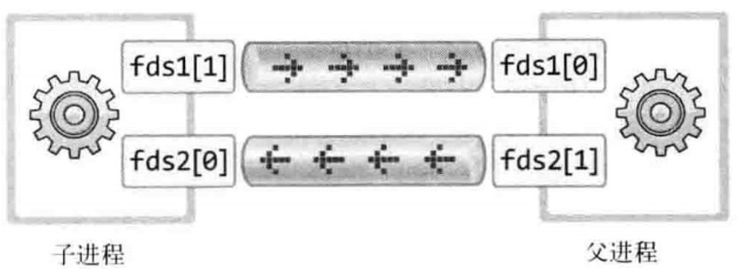
1 |
|
可以注意到：
- 此例中，父进程执行结束后，子进程才收到消息。
- 即使主进程执行结束，子进程也可以在管道中读取数据。即管道脱离进程而存在，是属于操作系统的。【管发不管收没收到】
- 能读取数据，不能判断进程是否已经结束；因此，可以使用双向管道来模拟应答来查看进程是否结束。【稳定性/确定性】
5.5.2 进程间通信：FIFO
对比
pipe管道，他已经可以完成在两个进程之间通信的任务，不过它似乎完成的不够好，也可以说是不够彻底。它只能在两个有亲戚关系的进程之间进行通信，这就大大限制了
pipe管道的应用范围。我们在很多时候往往希望能够在两个独立的进程之间进行通信，这样就无法使用pipe管道，所以一种能够满足独立进程通信的管道应运而生，就是
FIFO管道【先进先出，即先放入管道的消息先出来】。
FIFO管道的本质是操作系统中的命名文件。【当然，Linux的理念就是万物皆文件，它在操作系统中以命名文件的形式存在】
我们可以在操作系统中看见FIFO管道，在你有权限的情况下，甚至可以读写他们。
1 | #include <sys/stat.h> |
内核会针对FIFO文件开辟一个缓冲区，操作FIFO文件，可以操作缓冲区，实现进程通信。一旦使用mkfifo创建了一个FIFO，就可以使用opne打开它，常见的文件IO函数都可以用于FIFO。如：close、read、write、unlink等 。
举例：
1 |
|
注意：
- 一般情况下，
FIFO被称为命名管道【有文件、文件名，使用ls -l命令发现文件类型为p】，pipe被称为匿名管道 - 多个进程间通信【以5个为例】，只需要5个
FIFO管道即可。各进程只读对应管道，如要通信则只写对应进程的管道文件 - 打开
FIFO文件时，read端会阻塞等待write端打开open；wirte端同理，也会阻塞等待另一端的打开。
缺陷：
- 通信比较慢：速度受限于文件读写
- read端和write端会占用内存，可能会很大
- 由于两端的阻塞等待，如果对方没有连接，则无法抽身离开。
5.5.3 进程间通信：共享内存
在理解共享内存之前，就必须先了解
System V IPC通信机制。
System V IPC机制最初是由AT&T System V.2版本的UNIX引入的【UNIX为收费版本】。这些机制是专门用于IPC（Inter-Process Communication进程间通信）的，它们在同一个版本中被应用，又有着相似的编程接口，所以它们通常被称为System V IPC通信机制。共享内存是三个
System V IPC机制中的第二个。
共享内存，允许不同进程之间共享同一段逻辑内存。对于这段内存，它们都能访问，或者修改它，没有任何限制。所以它是进程间传递大量数据的一种非常有效的方式。【优势：稳定高效、速度快、可用于大量数据的传递，但不能超出固定限制】
“共享内存允许不同进程之间共享同一段逻辑内存”，这里是逻辑内存。也就是说共享内存的进程访问的可以不是同一段物理内存，这个没有明确的规定，但是大多数的系统实现都将进程之间的共享内存安排为同一段物理内存。
这些都是基于进程的内存空间都是虚拟内存。共享内存要求申请一块物理内存，然后映射到两个通信进程的地址空间，两个进程都可以对该内存进行读写。
共享内存实际上是由IPC机制分配的一段特殊的物理内存，它可以被映射到该进程的地址空间中，同时也可以被映射到其他拥有权限的进程的地址空间中。就像是使用了malloc分配内存一样，只不过这段内存是可以共享的。
共享内存的创建、映射、访问和删除
IPC提供了一套API来控制共享内存，使用共享内存的步骤通常是：
创建或获取一段共享内存；
将上一步创建的共享内存映射到该进程的地址空间；
访问共享内存；
将共享内存从当前的进程地址空间分离；
删除这段共享内存。
具体如下：
（1）使用shmget()函数来创建一段共享内存：
1 | //#include <sys/ipc.h> |
其中，关于
key的取值，其本质上是一个整数，取值相同时可进行通信；但万一随意取之后重名，会进行意料之外的通信。故一般
key使用ftok(".", 1)取得。"."表示当前路径，1是值key，ftok返回一个key，与当前路径相关。如果一个进程中有多个共享内存，可以使用
值key不断加1来解决。这种取法可以规避大多数冲突重名情况。
（2）使用函数shmat()来映射共享内存：
1 | //函数返回值是共享内存的首地址指针 |
（3）使用函数shmdt()来分离共享内存：
1 | //成功返回0，失败时返回-1 |
（4）使用shmctl()函数来控制共享内存：
1 | int shmctl( int shm_id, int command, struct shmid_ds* buf );//share memory control |
以下使用共享内存实现进程间通信。这个是写进程。
1 |
|
注意：
- 需要保证读完前，共享内存的进程还不能结束共享，即必须保证同步【外加信号机制，否则没写完就读必然不是想要的结果【代码中的
while等待机制】】 - 内存访问速度能达到10G/s以上，很可能上面的父进程共享结束，子进程都没开始读【读的其实是空内存】。
- 以上存在的需要手动同步的缺陷，可以利用下面的信号量解决
5.5.4 进程间通信：信号量
（1）什么是信号量？
为了防止出现因多个程序同时访问一个共享资源而引发的一系列问题，我们需要一种方法，它可以通过生成并使用令牌来授权，在任一时刻只能有一个执行线程访问代码的临界区域。
临界区域是指执行数据更新的代码需要独占式地执行。而信号量就可以提供这样的一种访问机制，让一个临界区同一时间只有一个线程在访问它，也就是说信号量是用来调协进程对共享资源的访问的。
信号量是一个特殊的变量，程序对其访问都是原子操作，且只允许对它进行等待【即P(信号变量)】和发送【即V(信号变量)】信息操作。【通过P和释放V】
最简单的信号量是只能取0和1的变量，这也是信号量最常见的一种形式，叫做二进制信号量。而可以取多个正整数的信号量被称为通用信号量。这里主要讨论二进制信号量。
（2）信号量的工作原理
信号量只能进行两种操作【等待和发送信号】，即P(sv)和V(sv)，具体行为如下：
P(sv)：如果sv的值大于零，就给它减1；如果它的值为零，就挂起该进程的执行V(sv)：如果有其他进程因等待sv而被挂起，就让它恢复运行，如果没有进程因等待sv而挂起，就给它加1。
举个例子：两个进程共享信号量sv，一旦其中一个进程执行了
P(sv)操作，它将得到信号量，并可以进入临界区，使sv减1。而第二个进程将被阻止进入临界区，因为当它试图执行P(sv)时，sv为0，它会被挂起以等待第一个进程离开临界区域并执行V(sv)释放信号量，这时第二个进程就可以恢复执行。
（3）Linux的信号量机制
A：信号量创建函数semget：
1 |
|
第一个参数key【最好自己创建，键值唯一】是整数值【唯一非零】，不相关的进程可以通过它访问一个信号量，它代表程序可能要使用的某个资源。
程序对所有信号量的访问都是间接的，程序先通过调用semget函数并提供一个键，再由系统生成一个相应的信号标识符 【semget涵数的返回值】，只有semget函数才直接使用信号量键，所有其他的信号量函数使用由semget函数返回的信号量标识符。如果多个程序使用相同的key值，key将负责协调工作。
对于第三个参数，想要当信号量不存在时创建一个新的信号量，可以和值
IPC_CREAT做按位或操作。设置了IPC_CREAT标志后，即使给出的键是一个已有信号量的键，也不会产生错误。而IPC_CREAT | IPC_EXCL则可以创建一个新的、唯一的信号量，如果信号量已存在，返回一个错误。
B：PV操作semop函数：
1 |
|
C：信号量控制函数semctl：
1 |
|
使用信号量改进共享内存的通信方式：
1 |
|
注意：
- 相比共享内存，信号量机制不需要地址映射的过程；
- 注意此处结构体的赋值方式【43行】
- 如果不删除信号量，可使用
ipcs -m或ipcs -s查看进程间通信相关的信息 - 很高效，但依然繁琐复杂，一般除非有大内存共享的需求，否则使用消息队列。
另外一个例子：
1 | /* Description:这个程序是测试信号量的互斥（进程间互斥），命令ipcs和ipcrm可以帮助我们查看 - s（信号量）、 - q（消息队列）、 - m（共享内存）是否创建成功与删除。使用方法：man ipcs 和 man ipcrm |
1 | /* |
5.5.5 进程间通信：消息队列
消息队列，提供了一种从一个进程向另一个进程发送一个数据块的方法。
- 每个数据块都被认为含有一个类型，接收进程可以独立地接收含有不同类型的数据结构。【如果纯粹发送数据，为什么开管道呢？】
- 我们可以通过发送消息来避免命名管道的同步和阻塞问题，如read端因write端而阻塞；而消息不会阻塞，实时性较强。
- 但是消息队列与命名管道
FIFO一样，每个数据块都有一个最大长度的限制；大数据传输需求使用共享内存。 - 消息队列其实就是一个链表
数据传输量大使用共享内存；数据量小单纯收发数据用
FIFO；又不想阻塞用消息队列；不用消息队列，那就用信号量实现，来取消阻塞。
消息队列API：
创建和访问一个消息队列
1 | //return：一个以key命名的消息队列的标识符（非零整数），失败时返回-1 |
把消息添加到消息队列中
1 | //ret:如果调用成功，消息数据的一分副本将被放到消息队列中，并返回0，失败时返回-1. |
从一个消息队列获取消息
1 | //return:失败时返回-1 |
控制消息队列，它与共享内存的shmctl函数相似，它的原型为：
1 | //ret:成功时返回0，失败时返回-1 |
消息队列示例：
1 |
|
5.5.6 socket通信
socket本质上用于不同网络地址下，两台设备的不同进程间的通信。但二者如果IP地址相同，就变成了IPC，即本机不同进程间的通信。
6 linux系统编程：线程
6.1 理解线程
线程是在进程中产生的一个执行单元，是CPU调度和分配的最小单元。其在同一个进程中与其他线程并行运行，他们可以共享进程内的资源，比如内存、地址空间、打开的文件等等。
- 线程是CPU调度和分派的基本单位【CPU对开发人员来说，最大的价值就是寄存器】
- CPU不会区分某个线程属于哪一个进程，即CPU眼里只有线程；进程运行对应运行进程的主线程。
- 进程是分配资源的基本单位，进程是操作系统调度的最小单元【由操作系统控制】
进程：正在运行的程序（狭义），是处于执行期的程序以及它所管理的资源【如打开的文件、挂起的信号、进程状态、地址空间等等】的总称。
从操作系统核心角度来说，进程是操作系统调度除CPU时间片外进行的资源分配和保护的基本单位，它有一个独立的虚拟地址空间，用来容纳进程映像【如与进程关联的程序与数据】，并以进程为单位对各种资源实施保护，如受保护地访问处理器、文件、外部设备及其他进程【进程间通信】
那到底如何理解进程和线程呢？
计算机有很多资源组成，比如CPU、内存、磁盘、鼠标、键盘等，就像一个工厂由电力系统、作业车间、仓库、管理办公室和工人组成。
假定工厂的电力有限，一次只能供给一个或少量几个车间使用。也就是说，一部分车间开工的时候，其他车间都必须停工。【背后的含义就是，单个CPU一次只能运行一个任务，多个CPU能够运行少量任务】
线程就好比车间里的工人。一个进程可以包括多个线程，他们协同完成某一个任务。
为什么使用多线程？
- 避免阻塞：单个进程只有一个主线程，当主线程阻塞的时候，整个进程也就阻塞了，无法再去做其它的一些功能了。【比如之前的单进程服务端，使用for循环5次服务5个客户端，主线程每次都会卡在accept，直到该客户端服务结束；而多线程则不会阻塞】
- 避免CPU空转：应用程序经常会涉及到RPC【远程进程调用】、数据库访问、磁盘IO等操作，这些操作的速度比CPU慢很多，而在等待这些响应时，CPU却不能去处理新的请求，导致这种单线程的应用程序性能很差；而使用线程，如果线程阻塞则挂起，等待唤醒。
- 提升效率：一个进程要独立拥有4GB的虚拟地址空间，而多个线程可以共享同一地址空间，线程的切换比进程的切换要快得多。下图展示了线程和进程的内存空间关系【涉及上下文切换】：
6.2 线程的创建与运行
Linux下API，pthread库目前已变成跨平台的库，有其Windows版本。
线程创建pthread_create：
线程具有单独的执行流，因此需要单独定义线程的
main函数，还需要请求操作系统在单独的执行流中执行该函数，完成该功能的函数如下：
1 |
|
线程等待pthread_join：
- 调用
pthread_join函数的进程（或线程）将进入等待状态，直到第一个参数为ID的线程终止为止 - 而且可以得到线程的main函数返回值，所以该函数比较有用。
1 |
|
示例：
1 |
|
注意：
- 可能编译出错，解决办法：附加额外库文件【项目属性 | 链接器 | 输入 | 库依赖项：添加
pthread】；如果是命令行编译：需要添加-lpthread - 常量会被编译进可执行文件的数据段【exe可执行文件分为：代码段、数据段、头部，其中头部包含一些资源等】
6.3 线程同步：互斥量
实例：两个线程实现加减法【直接访问全局变量sum，引入互斥操作】
1 |
|
共创建了50个线程，其中一半执行thread_inc函数中的代码，另一半则执行thread_des函数中的代码。全局变量num经过增减过程后应为0。
但运行结果并不是0，而且每次运行的结果均不同。虽然其原因目前还未知，但可以肯定的是，这对于线程的应用是个大问题。从操作系统层面来解释，变量是存在内存里面，运算是在CPU里面的。如图所示：
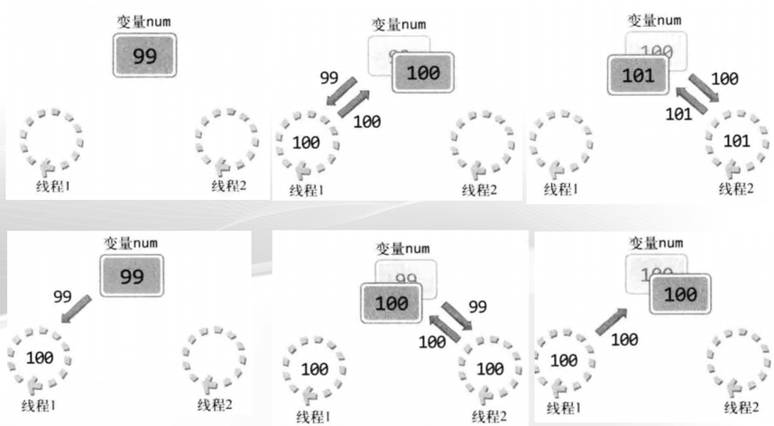
线程同步用于解决线程访问顺序引发的问题。需要同步的情况可以从如下两方面考虑：
- 同时访问同一内存空间时发生的情况。
- 需要指定访问同一内存空间的线程执行顺序的情况。
“控制（Control）线程执行顺序”的相关内容。假设有A、B两个线程，线程A负责向指定内存空间写入【保存】数据，线程B负责取走该数据。这种情况下，线程A首先应该访问约定的内存空间并保存数据。万一线程B先访问并取走数据，将导致错误结果。像这种需要控制执行顺序的情况也需要使用同步技术。
互斥量是”Mutual Exclusion“的简写，表示不允许多个线程同时访问。互斥量主要用于解决线程同步访问的问题。为了理解好互斥量，请观察如下对话过程：
A∶”请问里面有人吗?”
B∶”是的，有人。”
A∶”您好!”
B∶”请稍等!”
对于上述对话发生的场景。现实世界中的临界区就是洗手间。洗手间无法同时容纳多人【比作线程】，因此可以将临界区比喻为洗手间。而且这里发生的所有事情几乎可以全部套用到临界区同步过程，洗手间使用规则如下：
为了保护个人隐私，进洗手间时锁上门，出来时再打开；
如果有人使用洗手间，其他人需要在外面等待；
等待的人数可能很多，这些人需排队进入洗手间。
这就是洗手间的使用规则。同样，线程中为了保护临界区也需要套用上述规则。洗手间中存在，但之前的线程示例中缺少的是什么呢？就是锁机制。线程同步中同样需要锁，就像洗手间示例中使用的那样。互斥量就是一把优秀的锁，接下来介绍互斥量的创建及销毁函数。
1 |
|
使用互斥量改造实例：
1 |
|
注意：
- 互斥量和信号量相似，但不相同。
- 简言之，就是利用
lock和unlock函数围住临界区的两端。此时互斥量相当于一把锁，阻止多个线程同时访问。 - 还有一点需要注意，线程退出临界区时，如果忘了调用
pthread_mutex_unlock函数，那么其他为了进入临界区而调用pthread_mutex_lock函数的线程就无法摆脱阻塞状态【死锁状态】
6.4 线程同步：信号量
信号量与互斥量极为相似，在互斥量的基础上很容易理解信号量。
- 信号量有一个初始Value，互斥量也有，但
Value=1。信号量的值代表目前的资源数量，有人wait【P操作】，如果value>0，那就减1，否则等待。使用完资源释放value+1【V操作】。 - 也就是说，
wait/post【P/V】不一定成对出现。 - 初始
Value=1的信号量，可以理解为与互斥量等价，但信号量依然可以使用wait/post修改Value。
信号量创建及销毁方法如下：
1 |
|
接下来介绍：信号量中相当于互斥量lock、unlock的函数：
1 |
|
调用sem_init函数时，操作系统将创建信号量对象，此对象中记录着”信号量值”整数。该值在调用sem_post函数时增1，调用sem_wait函数时减1。但信号量的值不能小于0，因此，在信号量为0的情况下调用sem_wait函数时，调用函数的线程将进入阻塞状态【因为函数未返回】。
当然，此时如果有其他线程调用sem_post函数，信号量的值将变为1，而原本阻塞的线程可以将该信号量重新减为0并跳出阻塞状态。实际上就是通过这种特性完成临界区的同步操作，可以通过如下形式同步临界区【假设信号量的初始值为1】。
1 | sem_wait(&sem);//信号量变为0... |
上面的代码结构中，调用sem_wait函数进入临界区的线程在调用sem_post函数前不允许其他线程进入临界区。
信号量的值在0和1之间跳转，因此，具有这种特性的机制称为”二进制信号量“。
实例程序：
- 线程A从用户输入得到值后存入全局变量num，此时线程B将取走该值并累加。该过程共进行5次，完成后输出总和并退出程序。
- 线程A、线程B按顺序访问变量num，且需要线程同步。
1 |
|
注意：
- 利用输入进程的特性【慢】，通过取消信号量
sem2来优化程序
6.5 线程的销毁
Linux线程并不是在首次调用的线程main函数返回时自动销毁，所以用如下两种方法之一加以明确，否则由线程创建的内存空间将一直存在。
- 调用
pthread_join函数。 - 调用
pthread_detach函数。
之前调用过pthread_join函数。调用该函数时，不仅会等待线程终止，还会引导线程销毁。
但该函数的问题是，在线程终止前，调用该函数的线程将进入阻塞状态。因此，通常通过如下pthread_detach函数调用引导线程销毁。
1 |
|
- 调用
pthread_detach函数不会引起线程终止或进入阻塞状态，可以通过该函数引导销毁线程创建的内存空间。 - 调用该函数后不能再针对相应线程调用
pthread_join函数，这需要格外注意。 - 虽然还有方法在创建线程时可以指定销毁时机，但与
pthread_detach方式相比，结果上没有太大差异
1 | //此外可以通过线程函数来进行自动销毁,无需外部的操作【即由线程自身引导销毁】 |
修改上一节的实例：
1 | void* thread_input(void* arg) |
6.6 实战案例：多线程并发服务器的实现
//网络编程+多线程+线程同步实现的聊天服务器和客户端
//服务端
#include <stdio.h>
#include <stdlib.h>
#include <unistd.h>
#include <string.h>
#include <arpa/inet.h>
#include <sys/socket.h>
#include <netinet/in.h>
#include <pthread.h>
#define BUF_SIZE 100
#define MAX_CLNT 256
void * handle_clnt(void * arg);
void send_msg(char * msg, int len);
void error_handling(char * msg);
int clnt_cnt=0;
int clnt_socks[MAX_CLNT];
pthread_mutex_t mutx;
int main(int argc, char *argv[])
{
int serv_sock, clnt_sock;
struct sockaddr_in serv_adr, clnt_adr;
int clnt_adr_sz;
pthread_t t_id;
if(argc!=2) {
printf(“Usage : %s
exit(1);
}
pthread_mutex_init(&mutx, NULL);
serv_sock=socket(PF_INET, SOCK_STREAM, 0);
memset(&serv_adr, 0, sizeof(serv_adr));
serv_adr.sin_family=AF_INET;
serv_adr.sin_addr.s_addr=htonl(INADDR_ANY);
serv_adr.sin_port=htons(atoi(argv[1]));
if(bind(serv_sock, (struct sockaddr*) &serv_adr, sizeof(serv_adr))==-1)
error_handling(“bind() error”);
if(listen(serv_sock, 5)==-1)
error_handling(“listen() error”);
while(1)
{
clnt_adr_sz=sizeof(clnt_adr);
clnt_sock=accept(serv_sock, (struct sockaddr*)&clnt_adr,&clnt_adr_sz);
pthread_mutex_lock(&mutx);
clnt_socks[clnt_cnt++]=clnt_sock;
pthread_mutex_unlock(&mutx);
pthread_create(&t_id, NULL, handle_clnt, (void*)&clnt_sock);
pthread_detach(t_id);
printf(“Connected client IP: %s \n”, inet_ntoa(clnt_adr.sin_addr));
}
close(serv_sock);
return 0;
}
void * handle_clnt(void * arg)
{
int clnt_sock=((int)arg);
int str_len=0, i;
char msg[BUF_SIZE];
while((str_len=read(clnt_sock, msg, sizeof(msg)))!=0)
send_msg(msg, str_len);
pthread_mutex_lock(&mutx);
for(i=0; i<clnt_cnt; i++) // remove disconnected client
{
if(clnt_sock==clnt_socks[i])
{
while(i++<clnt_cnt-1)
clnt_socks[i]=clnt_socks[i+1];
break;
}
}
clnt_cnt–;
pthread_mutex_unlock(&mutx);
close(clnt_sock);
return NULL;
}
void send_msg(char * msg, int len) // send to all
{
int i;
pthread_mutex_lock(&mutx);
for(i=0; i<clnt_cnt; i++)
write(clnt_socks[i], msg, len);
pthread_mutex_unlock(&mutx);
}
void error_handling(char * msg)
{
fputs(msg, stderr);
fputc(‘\n’, stderr);
exit(1);
}
//客户端
#include <stdio.h>
#include <stdlib.h>
#include <unistd.h>
#include <string.h>
#include <arpa/inet.h>
#include <sys/socket.h>
#include <pthread.h>
#define BUF_SIZE 100
#define NAME_SIZE 20
void * send_msg(void * arg);
void * recv_msg(void * arg);
void error_handling(char * msg);
char name[NAME_SIZE]=”[DEFAULT]”;
char msg[BUF_SIZE];
int main(int argc, char *argv[])
{
int sock;
struct sockaddr_in serv_addr;
pthread_t snd_thread, rcv_thread;
void * thread_return;
if(argc!=4) {
printf(“Usage : %s
exit(1);
}
sprintf(name, “[%s]”, argv[3]);
sock=socket(PF_INET, SOCK_STREAM, 0);
memset(&serv_addr, 0, sizeof(serv_addr));
serv_addr.sin_family=AF_INET;
serv_addr.sin_addr.s_addr=inet_addr(argv[1]);
serv_addr.sin_port=htons(atoi(argv[2]));
if(connect(sock, (struct sockaddr*)&serv_addr, sizeof(serv_addr))==-1)
error_handling(“connect() error”);
pthread_create(&snd_thread, NULL, send_msg, (void*)&sock);
pthread_create(&rcv_thread, NULL, recv_msg, (void*)&sock);
pthread_join(snd_thread, &thread_return);
pthread_join(rcv_thread, &thread_return);
close(sock);
return 0;
}
void * send_msg(void * arg) // send thread main
{
int sock=((int)arg);
char name_msg[NAME_SIZE+BUF_SIZE];
while(1)
{
fgets(msg, BUF_SIZE, stdin);
if(!strcmp(msg,”q\n”)||!strcmp(msg,”Q\n”))
{
close(sock);
exit(0);
}
sprintf(name_msg,”%s %s”, name, msg);
write(sock, name_msg, strlen(name_msg));
}
return NULL;
}
void * recv_msg(void * arg) // read thread main
{
int sock=((int)arg);
char name_msg[NAME_SIZE+BUF_SIZE];
int str_len;
while(1)
{
str_len=read(sock, name_msg, NAME_SIZE+BUF_SIZE-1);
if(str_len==-1)
return (void*)-1;
name_msg[str_len]=0;
fputs(name_msg, stdout);
}
return NULL;
}
void error_handling(char *msg)
{
fputs(msg, stderr);
fputc(‘\n’, stderr);
exit(1);
}
7 I/O复用
7.1 Select模型以及实战案例
复用的概念
是为了提高物理设备的效率，
用最少的物理要素传递
最多数据时使用的技术。
多进程服务器的缺点和解决办法
多进程服务器
1、需要大量的运算
2、大量的内存空间
复用技术在服务端的应用
理解select函数并实现服务端：
1、是否存在套接字接收数据？
2、无需阻塞传输数据的套接字有哪些？
3、哪些套接字发生了异常？
Select**模型具体步骤**
1、设置文件描述符：
select函数监视多个（不超过1024个）文件描述符
fd_set结构体
FD_ZERO**（fd set *fdset**）∶将fd set变量的所有位初始化为0。
FD_SET**（int fd*，fd set\fdset**）∶**在参数dset指向的变量中注册文件描述符fd的信息。
FD_CLR**（int fd*，fd set\fdset**）∶**从参数fdset指向的变量中清除文件描述符fd的信息。
FD_ISSET**（int fd*，fd_set\fdset**）∶**若参数fdset指向的变量中包含文件描述符fd的信息，则返回”真”。
Select**函数：**
#include<sys/select.h>#include <sys/time.h>
int select(int maxfd, fd_set*readset, fd_set* writeset, fd_set*exceptset, const struct
timeval * timeout);
→成功时返回大于0的值，失败时返回-1。
maxtfd ：监视对象文件描述符数量。
readset：用于检查可读性，
writeset：用于检查可写性，
exceptset：用于检查带外数据，
timeout：一个指向timeval结构的指针，用于决定select等待I/O的最长时间。如果为空将一直等待。
Select实现I/O复用服务端：
#include <stdio.h>
#include <stdlib.h>
#include <string.h>
#include <unistd.h>
#include <arpa/inet.h>
#include <sys/socket.h>
#include <sys/time.h>
#include <sys/select.h>
#define BUF_SIZE 100
void error_handling(char *buf);
int main(int argc, char *argv[])
{
int serv_sock, clnt_sock;
struct sockaddr_in serv_adr, clnt_adr;
struct timeval timeout;
fd_set reads, cpy_reads;
socklen_t adr_sz;
int fd_max, str_len, fd_num, i;
char buf[BUF_SIZE];
if(argc!=2) {
printf(“Usage : %s
exit(1);
}
serv_sock=socket(PF_INET, SOCK_STREAM, 0);
memset(&serv_adr, 0, sizeof(serv_adr));
serv_adr.sin_family=AF_INET;
serv_adr.sin_addr.s_addr=htonl(INADDR_ANY);
serv_adr.sin_port=htons(atoi(argv[1]));
if(bind(serv_sock, (struct sockaddr*) &serv_adr, sizeof(serv_adr))==-1)
error_handling(“bind() error”);
if(listen(serv_sock, 5)==-1)
error_handling(“listen() error”);
FD_ZERO(&reads);
FD_SET(serv_sock, &reads);
fd_max=serv_sock;
while(1)
{
cpy_reads=reads;
timeout.tv_sec=5;
timeout.tv_usec=5000;
if((fd_num=select(fd_max+1, &cpy_reads, 0, 0, &timeout))==-1)
break;
if(fd_num==0)
continue;
for(i=0; i<fd_max+1; i++)
{
if(FD_ISSET(i, &cpy_reads))
{
if(i==serv_sock) // connection request!
{
adr_sz=sizeof(clnt_adr);
clnt_sock=
accept(serv_sock, (struct sockaddr*)&clnt_adr, &adr_sz);
FD_SET(clnt_sock, &reads);
if(fd_max<clnt_sock)
fd_max=clnt_sock;
printf(“connected client: %d \n”, clnt_sock);
}
else // read message!
{
str_len=read(i, buf, BUF_SIZE);
if(str_len==0) // close request!
{
FD_CLR(i, &reads);
close(i);
printf(“closed client: %d \n”, i);
}
else
{
write(i, buf, str_len); // echo!
}
}
}
}
}
close(serv_sock);
return 0;
}
void error_handling(char *buf)
{
fputs(buf, stderr);
fputc(‘\n’, stderr);
exit(1);
}
客户端：
#include <stdio.h>
#include <stdlib.h>
#include <string.h>
#include <unistd.h>
#include <arpa/inet.h>
#include <sys/socket.h>
#define BUF_SIZE 1024
void error_handling(char *message);
int main(int argc, char *argv[])
{
int sock;
char message[BUF_SIZE];
int str_len;
struct sockaddr_in serv_adr;
if(argc!=3) {
printf(“Usage : %s
exit(1);
}
sock=socket(PF_INET, SOCK_STREAM, 0);
if(sock==-1)
error_handling(“socket() error”);
memset(&serv_adr, 0, sizeof(serv_adr));
serv_adr.sin_family=AF_INET;
serv_adr.sin_addr.s_addr=inet_addr(argv[1]);
serv_adr.sin_port=htons(atoi(argv[2]));
if(connect(sock, (struct sockaddr*)&serv_adr, sizeof(serv_adr))==-1)
error_handling(“connect() error!”);
else
puts(“Connected………..”);
while(1)
{
fputs(“Input message(Q to quit): “, stdout);
fgets(message, BUF_SIZE, stdin);
if(!strcmp(message,”q\n”) || !strcmp(message,”Q\n”))
break;
write(sock, message, strlen(message));
str_len=read(sock, message, BUF_SIZE-1);
message[str_len]=0;
printf(“Message from server: %s”, message);
}
close(sock);
return 0;
}
void error_handling(char *message)
{
fputs(message, stderr);
fputc(‘\n’, stderr);
exit(1);
}
7.2 Epoll模型
Select模型的缺点：
调用select函数后常见的针对所有文件描述符的循环语句。
每次调用select函数时都需要向该函数传递监视对象信息。
调用select 函数后，并不是把发生变化的文件描述符单独集中到一起，而是通过观察作为监视对象的fd_set变量的变化，找出发生变化的文件描述符，因此无法避免针对所有监视对象的循环语句。而且，作为监视对象的fd_set变量会发生变化，所以调用select函数前应复制并保存原有信息，并在每次调用select函数时传递新的监视对象信息。
那到底哪些因素是提高性能的更大障碍?是调用select函数后常见的针对所有文件描述符对象的循环语句?还是每次需要传递的监视对象信息?
只看代码的话很容易认为是循环。但相比于循环语句，更大的障碍是每次传递监视对象信息。因为传递监视对象信息具有如下含义∶
“**每次调用select**函数时向操作系统传递监视对象信息。”
应用程序向操作系统传递数据将对程序造成很大负担，而且无法通过优化代码解决，因此将成为性能上的致命弱点。
“**那为何需要把监视对象信息传递给操作系统呢?”**
有些函数不需要操作系统的帮助就能完成功能，而有些则必须借助于操作系统。假设各位定义了四则运算相关函数，此时无需操作系统的帮助。但select函数与文件描述符有关，更准确地说，是监视套接字变化的函数。而套接字是由操作系统管理的，所以select函数绝对需要借助于操作系统才能完成功能。
select函数的这一缺点可以通过这种方式弥补∶
“**向操作系统传递1**次监视对象，监视范围或内容发生变化只通知发生变化的事项。”
这样就无需每次调用select函数时都向操作系统传递监视对象信息，但前提是操作系统支持这种处理方式（每种操作系统支持的程度和方式存在差异）。Linux的支持方式是epoll，Windows 的支持方式是IOCP。
Epoll**的三大函数：epoll_create**，epoll_wait**， epoll_ctl**
epoll_create
#include<sys/epoll.h>
int epoll_create(int size);
→成功时返回epoll文件描述符，失败时返回-1。
size：epoll实例的大小。
该函数从2.3.2版本的开始加入的，2.6版开始引入内核
Linux最新的内核稳定版本已经到了5.8.14，长期支持版本到了5.4.70
从2.6.8内核开始的Linux，会忽略这个参数，但是必须要大于0
这个是Linux独有的函数
epoll_ctl
#include<sys/epoll.h>
int epoll_ctl(int epfd, int op, int fd, struct epoll_event* event);
→成功时返回0，失败时返回-1。
●epfd 用于注册监视对象的epoll例程的文件描述符。
●op 用于指定监视对象的添加、删除或更改等操作。
EPOLL_CTL_ADD,EPOLL_CTL_MOD,EPOLL_CTL_DEL
● fd 需要注册的监视对象文件描述符。
● event 监视对象的事件类型。
EPOLLIN∶需要读取数据的情况。
EPOLLOUT∶输出缓冲为空，可以立即发送数据的情况。
EPOLLPRI∶收到OOB数据的情况。
EPOLLRDHUP∶断开连接或半关闭的情况，这在边缘触发方式下非常有用。
EPOLLERR∶发生错误的情况。
EPOLLET∶以边缘触发的方式得到事件通知。
EPOLLONESHOT∶发生一次事件后，相应文件描述符不再收到事件通知。因此需要向
epoll_ctl函数的第二个参数传递
EPOLLCTL_MOD，再次设置事件。
epoll_wait**：**
#include <sys/epoll.h>
int epoll_wait(int epfd, struct epoll_event*events,int maxevents,int timeout);
→成功时返回发生事件的文件描述符数，失败时返回-1。
epfd 表示事件发生监视范围的epol例程的文件描述符
events 保存发生事件的文件描述符集合的结构体地址值。
maxevents 第二个参数中可以保存的最大事件数目。
Timeout：以1/1000秒为单位的等待时间，传递-1时，一直等待直到发生事件。
7.3 Epoll实战案例
服务端：
#include <stdio.h>
#include <stdlib.h>
#include <string.h>
#include <unistd.h>
#include <arpa/inet.h>
#include <sys/socket.h>
#include <sys/epoll.h>
#define BUF_SIZE 100
#define EPOLL_SIZE 50
void error_handling(char *buf);
int main(int argc, char *argv[])
{
int serv_sock, clnt_sock;
struct sockaddr_in serv_adr, clnt_adr;
socklen_t adr_sz;
int str_len, i;
char buf[BUF_SIZE];
struct epoll_event *ep_events;
struct epoll_event event;
int epfd, event_cnt;
if(argc!=2) {
printf(“Usage : %s
exit(1);
}
serv_sock=socket(PF_INET, SOCK_STREAM, 0);
memset(&serv_adr, 0, sizeof(serv_adr));
serv_adr.sin_family=AF_INET;
serv_adr.sin_addr.s_addr=htonl(INADDR_ANY);
serv_adr.sin_port=htons(atoi(argv[1]));
if(bind(serv_sock, (struct sockaddr*) &serv_adr, sizeof(serv_adr))==-1)
error_handling(“bind() error”);
if(listen(serv_sock, 5)==-1)
error_handling(“listen() error”);
epfd=epoll_create(EPOLL_SIZE);
ep_events=malloc(sizeof(struct epoll_event)*EPOLL_SIZE);
event.events=EPOLLIN;//默认是设置条件触发方式
event.data.fd=serv_sock;
epoll_ctl(epfd, EPOLL_CTL_ADD, serv_sock, &event);
while(1)
{
event_cnt=epoll_wait(epfd, ep_events, EPOLL_SIZE, -1);
if(event_cnt==-1)
{
puts(“epoll_wait() error”);
break;
}
for(i=0; i<event_cnt; i++)
{
if(ep_events[i].data.fd==serv_sock)
{
adr_sz=sizeof(clnt_adr);
clnt_sock=
accept(serv_sock, (struct sockaddr*)&clnt_adr, &adr_sz);
event.events=EPOLLIN;
event.data.fd=clnt_sock;
epoll_ctl(epfd, EPOLL_CTL_ADD, clnt_sock, &event);
printf(“connected client: %d \n”, clnt_sock);
}
else
{
str_len=read(ep_events[i].data.fd, buf, BUF_SIZE);
if(str_len==0) // close request!
{
epoll_ctl(
epfd, EPOLL_CTL_DEL, ep_events[i].data.fd, NULL);
close(ep_events[i].data.fd);
printf(“closed client: %d \n”, ep_events[i].data.fd);
}
else
{
write(ep_events[i].data.fd, buf, str_len); // echo!
}
}
}
}
close(serv_sock);
close(epfd);
return 0;
}
void error_handling(char *buf)
{
fputs(buf, stderr);
fputc(‘\n’, stderr);
exit(1);
}
客户端和select模型一样。
7.4 边缘触发和条件触发
条件触发(level-triggered，也被称为水平触发)LT:
只要满足条件，就触发一个事件(只要有数据没有被获取，内核就不断通知你)
边缘触发(edge-triggered)ET:
每当状态变化时，触发一个事件
“举个读socket的例子，假定经过长时间的沉默后，现在来了100个字节，这时无论边缘触发和条件触发都会产生一个通知应用程序可读。应用程序读了50个字节，然后重新调用api等待io事件。
这时水平触发的api会因为还有50个字节可读从而立即返回用户一个read ready notification。
而边缘触发的api会因为可读这个状态没有发生变化而陷入长期等待。 因此在使用边缘触发的api时，要注意每次都要读到socket返回EWOULDBLOCK为止，否则这个socket就算废了。而使用条件触发的api 时，如果应用程序不需要写就不要关注socket可写的事件，否则就会无限次的立即返回一个write ready notification。
select属于典型的条件触发。
条件触发案例：
#include <stdio.h>
#include <stdlib.h>
#include <string.h>
#include <unistd.h>
#include <fcntl.h>
#include <arpa/inet.h>
#include <sys/socket.h>
#include <sys/epoll.h>
#define BUF_SIZE 4
#define EPOLL_SIZE 50
void error_handling(char *buf);
int main(int argc, char *argv[])
{
int serv_sock, clnt_sock;
struct sockaddr_in serv_adr, clnt_adr;
socklen_t adr_sz;
int str_len, i;
char buf[BUF_SIZE];
struct epoll_event *ep_events;
struct epoll_event event;
int epfd, event_cnt;
if(argc!=2) {
printf(“Usage : %s
exit(1);}
serv_sock=socket(PF_INET, SOCK_STREAM, 0);
memset(&serv_adr, 0, sizeof(serv_adr));
serv_adr.sin_family=AF_INET;
serv_adr.sin_addr.s_addr=htonl(INADDR_ANY);
serv_adr.sin_port=htons(atoi(argv[1]));
if(bind(serv_sock, (struct sockaddr*) &serv_adr, sizeof(serv_adr))==-1)
error_handling(“bind() error”);
if(listen(serv_sock, 5)==-1)
error_handling(“listen() error”);
epfd=epoll_create(EPOLL_SIZE);
ep_events=malloc(sizeof(struct epoll_event)*EPOLL_SIZE);
event.events=EPOLLIN;
event.data.fd=serv_sock;
epoll_ctl(epfd, EPOLL_CTL_ADD, serv_sock, &event);
while(1)
{
event_cnt=epoll_wait(epfd, ep_events, EPOLL_SIZE, -1);
if(event_cnt==-1)
{
puts(“epoll_wait() error”);
break;
}
puts(“return epoll_wait”);
for(i=0; i<event_cnt; i++)
{
if(ep_events[i].data.fd==serv_sock)
{
adr_sz=sizeof(clnt_adr);
clnt_sock=accept(serv_sock, (struct sockaddr*)&clnt_adr, &adr_sz);
event.events=EPOLLIN;
event.data.fd=clnt_sock;
epoll_ctl(epfd, EPOLL_CTL_ADD, clnt_sock, &event);
printf(“connected client: %d \n”, clnt_sock);
}
else
{
str_len=read(ep_events[i].data.fd, buf, BUF_SIZE);
if(str_len==0) // close request!
{
epoll_ctl(epfd, EPOLL_CTL_DEL, ep_events[i].data.fd, NULL);
close(ep_events[i].data.fd);
printf(“closed client: %d \n”, ep_events[i].data.fd);
}
else
{
write(ep_events[i].data.fd, buf, str_len); // echo!
}
}
}
}
close(serv_sock);
close(epfd);
return 0;
}
void error_handling(char *buf)
{
fputs(buf, stderr);
fputc(‘\n’, stderr);
exit(1);
}
边缘触发：
#include <stdio.h>
#include <stdlib.h>
#include <string.h>
#include <unistd.h>
#include <fcntl.h>
#include <errno.h>
#include <arpa/inet.h>
#include <sys/socket.h>
#include <sys/epoll.h>
#define BUF_SIZE 4
#define EPOLL_SIZE 50
void setnonblockingmode(int fd);
void error_handling(char *buf);
int main(int argc, char *argv[])
{
int serv_sock, clnt_sock;
struct sockaddr_in serv_adr, clnt_adr;
socklen_t adr_sz;
int str_len, i;
char buf[BUF_SIZE];
struct epoll_event *ep_events;
struct epoll_event event;
int epfd, event_cnt;
if(argc!=2) {
printf(“Usage : %s
exit(1);
}
serv_sock=socket(PF_INET, SOCK_STREAM, 0);
memset(&serv_adr, 0, sizeof(serv_adr));
serv_adr.sin_family=AF_INET;
serv_adr.sin_addr.s_addr=htonl(INADDR_ANY);
serv_adr.sin_port=htons(atoi(argv[1]));
if(bind(serv_sock, (struct sockaddr*) &serv_adr, sizeof(serv_adr))==-1)
error_handling(“bind() error”);
if(listen(serv_sock, 5)==-1)
error_handling(“listen() error”);
epfd=epoll_create(EPOLL_SIZE);
ep_events=malloc(sizeof(struct epoll_event)*EPOLL_SIZE);
setnonblockingmode(serv_sock);
event.events=EPOLLIN;
event.data.fd=serv_sock;
epoll_ctl(epfd, EPOLL_CTL_ADD, serv_sock, &event);
while(1)
{
event_cnt=epoll_wait(epfd, ep_events, EPOLL_SIZE, -1);
if(event_cnt==-1)
{
puts(“epoll_wait() error”);
break;
}
puts(“return epoll_wait”);
for(i=0; i<event_cnt; i++)
{
if(ep_events[i].data.fd==serv_sock)
{
adr_sz=sizeof(clnt_adr);
clnt_sock=accept(serv_sock, (struct sockaddr*)&clnt_adr, &adr_sz);
setnonblockingmode(clnt_sock);
event.events=EPOLLIN|EPOLLET;
event.data.fd=clnt_sock;
epoll_ctl(epfd, EPOLL_CTL_ADD, clnt_sock, &event);
printf(“connected client: %d \n”, clnt_sock);
}
else
{
while(1)
{
str_len=read(ep_events[i].data.fd, buf, BUF_SIZE);
if(str_len==0) // close request!
{
epoll_ctl(epfd, EPOLL_CTL_DEL, ep_events[i].data.fd, NULL);
close(ep_events[i].data.fd);
printf(“closed client: %d \n”, ep_events[i].data.fd);
break;
}
else if(str_len<0)
{
if(errno==EAGAIN)
break;
}
else
{
write(ep_events[i].data.fd, buf, str_len); // echo!
}
}
}
}
}
close(serv_sock);
close(epfd);
return 0;
}
void setnonblockingmode(int fd)
{
int flag=fcntl(fd, F_GETFL, 0);
fcntl(fd, F_SETFL, flag|O_NONBLOCK);
}
void error_handling(char *buf)
{
fputs(buf, stderr);
fputc(‘\n’, stderr);
exit(1);
}
运行结果中需要注意的是，客户端发送消息次数和服务器端epollwait函数调用次数。客户端从请求连接到断开连接共发送5次数据，服务器端也相应产生5个事件。
四 动态库项目
什么是动态库？
动态库的作用？
Windows下动态库项目的创建
Linux下动态库的项目的创建
动态库的直接加载
动态库的手动加载与卸载
动态更换动态库的实例
静态库项目
什么是静态库？
静态库的作用？
Windows下静态库项目的创建
Linux下静态库项目的创建
Windows下静态库的导入
Linux下静态库的导入
Windows下静态库开发示例
Linux下静态库开发示例
Makefile入门
makefile定义了一系列的规则来指定，哪些文件需要先编译，哪些文件需要后编译，哪些文件需要重新编译，甚至于进行更复杂的功能操作，因为 makefile就像一个Shell脚本一样，其中也可以执行操作系统的命令。
Make**工具**最主要也是最基本的功能就是通过makefile文件来描述源程序之间的相互关系并自动维护编译工作。
而makefile 文件需要按照某种语法进行编写，文件中需要说明如何编译各个源文件并连接生成可执行文件，并要求定义源文件之间的依赖关系。
makefile 文件是许多编译器–包括 Windows下的编译器–维护编译信息的常用方法，只是在集成开发环境中，用户通过友好的界面修改 makefile 文件而已。
在 UNIX 系统中，习惯使用 Makefile 作为 makefile 文件。如果要使用其他文件作为 makefile，则可利用类似下面的 make 命令选项指定 makefile 文件。
一个文件，指示程序如何编译和链接程序。makefile文件的默认名称是名副其实的Makefile，但可以指定一个命令行选项的名称。
make程序有助于您在开发大型程序跟踪整个程序，其中部分已经改变，只有那些编译自上次编译的程序，它已经改变了部分。
关于编译阶段
编译一个小的C程序至少需要一个单一的文件.h文件（如适用）。虽然命令执行此任务只需CC file.c中，有3个步骤，以取得最终的可执行程序，如下所示：
编译阶段：所有的C语言代码.c文件中被转换成一个低级语言汇编语言;决策.s文件。
汇编阶段：前阶段所作的汇编语言代码，然后转换成目标代码的代码片段，该计算机直接理解。目标代码文件.o 结束。
链接阶段：编译程序涉及到链接的对象代码的代码库，其中包含一定的“内置”的功能，如printf的最后阶段。这个阶段产生一个可执行程序，默认情况下，这是名为a.out。
为什么需要Makefile？
对于本次教程中的讨论，假定有以下的源文件。
- main.cpp
- hello.cpp
- factorial.cpp
- functions.h
main.cpp 文件的内容
1 | #include <iostream.h>`` ``#include "functions.h"`` ``int main(){`` print_hello();`` cout << endl;`` cout << "The factorial of 5 is " << factorial(5) << endl;`` return 0;``} |
hello.cpp 文件的内容
1 | #include <iostream.h>`` ``#include "functions.h"`` ``void print_hello(){`` cout << "Hello World!";``} |
factorial.cpp 文件的内容
1 | #include "functions.h"`` ``int factorial(int n){`` if(n!=1){`` return(n * factorial(n-1));`` }`` else return 1;``} |
functions.h 内容
1 | void print_hello();``int factorial(int n); |
琐碎的方法来编译的文件，并获得一个可执行文件，通过运行以下命令：
1 | CC main.cpp hello.cpp factorial.cpp -o hello |
这上面的命令将生成二进制的Hello。在我们的例子中，我们只有四个文件，我们知道的函数调用序列，因此它可能是可行的，上面写的命令的手，准备最后的二进制。但对于大的项目，我们将有源代码文件成千上万的文件，就很难保持二进制版本。
make命令允许您管理大型程序或程序组。当开始编写较大的程序，你会发现，重新编译较大的程序，需要更长的时间比重新编译的短节目。此外会发现通常只能在一小部分的程序（如单一功能正在调试），其余的程序不变。
在随后的章节中，我们将看到项目是如何准备一个makefile。
Makefile 宏
make程序允许您使用宏，这是类似的变量。 = 一对一个Makefile中定义的宏。例如：
1 | MACROS= -me``PSROFF= groff -Tps``DITROFF= groff -Tdvi``CFLAGS= -O -systype bsd43``LIBS := "-lncurses -lm -lsdl"``LIBS += -lstdc++``MYFACE = ":*)"``PROJ_HOME = /home/fengpan/projects``$(MACROS)``$(MYFACE) :*) |
- 特殊的宏
目标规则集发出任何命令之前，有一些特殊的预定义宏。
· $@ 表示目标文件。
· $? 表示比目标还要新的依赖文件列表。
因此，举例来说，我们可以使用一个规则
1 | hello: main.cpp hello.cpp factorial.cpp`` $(CC) $(CFLAGS) $? $(LDFLAGS) -o $@`` ``alternatively:`` ``hello: main.cpp hello.cpp factorial.cpp`` $(CC) $(CFLAGS) $@.cpp $(LDFLAGS) -o $@ |
在这个例子中$@代表 hello， $? 或$@.cpp将拾取所有更改的源文件。
有两个比较特殊的隐含规则中使用的宏。它们是
· $< 表示第一个依赖文件。
· $* 这个变量表示目标模式中“%”及其之前的部分。
对于$*如果目标是“dir/a.foo.b”，并且目标的模式是“a.%.b”，那么，“$*”的值就是“dir/a.foo”。这个变量对于构造有关联的文件名是比较有较。如果目标中没有模式的定义，那么“$*”也就不能被推导出，但是，如果目标文件的后缀是make所识别的，那么“$*”就是除了后缀的那一部分。例如：如果目标是“foo.c”，因为“.c”是make所能识别的后缀名，所以，“$*”的值就是“foo”。这个特性是GNU make的，很有可能不兼容于其它版本的make，所以，你应该尽量避免使用“$*”，除非是在隐含规则或是静态模式中。如果目标中的后缀是make所不能识别的，那么“$*”就是空值。。
常见的隐含规则的构造 .o（对象）文件，.cpp（源文件）。
1 | .o:.cpp`` $(CC) $(CFLAGS) -c $<`` ``alternatively`` ``.o:.cpp`` $(CC) $(CFLAGS) -c $*.cpp |
- 传统宏
有很多默认的宏（输入“make -p”打印出来的默认值）。大多数使用它们的规则是很明显的：
这些预定义变量，即。在隐含规则中使用的宏分为两大类：那些程序名（例如CC）和那些含有参数的程序（如CFLAGS）。
下面是一些比较常见的变量用作内置规则：makefile文件的程序名称的表。
| AR | Archive-maintaining program; default `ar’. |
|---|---|
| AS | Program for compiling assembly files; default `as’. |
| CC | Program for compiling C programs; default `cc’. |
| CO | Program for checking out files from RCS; default `co’. |
| CXX | Program for compiling C++ programs; default `g++’. |
| CPP | Program for running the C preprocessor, with results to standard output; default `$(CC) -E’. |
| FC | Program for compiling or preprocessing Fortran and Ratfor programs; default `f77’. |
| GET | Program for extracting a file from SCCS; default `get’. |
| LEX | Program to use to turn Lex grammars into source code; default `lex’. |
| YACC | Program to use to turn Yacc grammars into source code; default `yacc’. |
| LINT | Program to use to run lint on source code; default `lint’. |
| M2C | Program to use to compile Modula-2 source code; default `m2c’. |
| PC | Program for compiling Pascal programs; default `pc’. |
| MAKEINFO | Program to convert a Texinfo source file into an Info file; default `makeinfo’. |
| TEX | Program to make TeX dvi files from TeX source; default `tex’. |
| TEXI2DVI | Program to make TeX dvi files from Texinfo source; default `texi2dvi’. |
| WEAVE | Program to translate Web into TeX; default `weave’. |
| CWEAVE | Program to translate C Web into TeX; default `cweave’. |
| TANGLE | Program to translate Web into Pascal; default `tangle’. |
| CTANGLE | Program to translate C Web into C; default `ctangle’. |
| RM | Command to remove a file; default `rm -f’. |
这里是一个变量，其值是上述程序的额外的参数表。所有这些的默认值是空字符串，除非另有说明。
| ARFLAGS | Flags to give the archive-maintaining program; default `rv’. |
|---|---|
| ASFLAGS | Extra flags to give to the assembler (when explicitly invoked on a .s' or.S’ file). |
| CFLAGS | Extra flags to give to the C compiler. |
| CXXFLAGS | Extra flags to give to the C compiler. |
| COFLAGS | Extra flags to give to the RCS co program. |
| CPPFLAGS | Extra flags to give to the C preprocessor and programs that use it (the C and Fortran compilers). |
| FFLAGS | Extra flags to give to the Fortran compiler. |
| GFLAGS | Extra flags to give to the SCCS get program. |
| LDFLAGS | Extra flags to give to compilers when they are supposed to invoke the linker, `ld’. |
| LFLAGS | Extra flags to give to Lex. |
| YFLAGS | Extra flags to give to Yacc. |
| PFLAGS | Extra flags to give to the Pascal compiler. |
| RFLAGS | Extra flags to give to the Fortran compiler for Ratfor programs. |
| LINTFLAGS | Extra flags to give to lint. |
注：您可以取消-R'或 –no-builtin-variables“选项隐含规则使用的所有变量。
如，也可以在命令行中定义的宏
1 | make CPP=/home/fengpan/projects |
Makefile 定义依赖性
这是很常见的，最终的二进制文件将依赖于各种源代码和源代码的头文件。依存关系是重要的，因为他们告诉对任何目标的源。请看下面的例子
1 | hello: main.o factorial.o hello.o`` $(CC) main.o factorial.o hello.o -o hello |
在这里，我们告诉hello 依赖main.o，factorial.o和hello.o，所以每当有任何变化，这些目标文件将采取行动。
同时我们会告诉如何准备 .o文件，所以我们必须定义这些依赖也如下
1 | main.o: main.cpp functions.h`` $(CC) -c main.cpp`` ``factorial.o: factorial.cpp functions.h`` $(CC) -c factorial.cpp`` ``hello.o: hello.cpp functions.h`` $(CC) -c hello.cpp |
Makefile 定义规则
一个Makefile目标规则的一般语法
1 | target [target...] : **[dependent ....]**`` **[ command ...]** |
方括号中的项是可选的，省略号是指一个或多个。注意标签，每个命令前需要。
下面给出一个简单的例子，定义了一个规则使您的目标从 hello 其他三个文件。
1 | hello: main.o factorial.o hello.o`` $(CC) $? -o $@ |
注：在这个例子中，你必须放弃规则，使所有对象从源文件的文件
语义是相当简单的。当”make target”发现目标规则适用，如有眷属的新目标，使执行的命令一次一个（后宏替换）。如果有任何依赖进行，即先发生（让您拥有一个递归）。
如果有任何命令返回一个失败状态，MAKE将终止。这就是为什么看到规则，如：
1 | clean:`` -rm *.o *~ core paper |
Make忽略一个破折号开头的命令行返回的状态。例如。如果没有核心文件，谁在乎呢？
Make 会 echo 宏字符串替换的命令后，告诉发生了什么事，因为它发生。有时可能想要把它们关掉。例如：
1 | install:`` @echo You must be root to install |
大家所期望的Makefile的 某些目标。应该总是先浏览，但它的合理预期的目标（或只是做），安装，清理。
· make all - 编译一切，让你可以在本地测试，之前安装的东西。
· make install - 应安装在正确的地方的东西。但看出来的东西都安装在正确的地方为系统。
· make clean - 应该清理的东西。摆脱的可执行文件，任何临时文件，目标文件等。
Makefile的隐含规则
该命令应该在所有情况下，我们建立一个可执行x的的源代码x.cpp的作为一个隐含的规则，这可以说：
1 | .cpp:`` $(CC) $(CFLAGS) $@.cpp $(LDFLAGS) -o $@ |
这种隐含的规则说，如何make c, x.c 运行x.c 调用输出x。规则是隐式的，因为没有特定的目标提到。它可用于在所有的情况下。
另一种常见的隐含规则的构造 .o（对象）文件和 .cpp （源文件）。
1 | .o:.cpp`` $(CC) $(CFLAGS) -c $<`` ``alternatively`` ``.o:.cpp`` $(CC) $(CFLAGS) -c $*.cpp |
$^ 表明所有的依赖项
LDFLAGS = -lstdc++
hello:main.o factorial.o hello.o
$(CC) $^ $(LDFLAGS) -o $@
.o:.cpp functions.h
$(CC) -c $<
clean:
-rm *.o hello
install:hello
@echo “You need build hello!”
echo “no @ used”
all:hello install
Makefile 自定义后缀规则
就其本身而言，make已经知道，为了创建一个 .o文件，就必须使用 cc-c 相应的c文件。 建成MAKE这些规则，可以利用这一点来缩短Makefile。如果仅仅只是表示 .h 文件的 Makefile依赖线，依赖于目前的目标是，MAKE会知道，相应的文件已规定。你甚至不需要编译器包括命令。
这减少了我们的Makefile更多，如下所示：
1 | OBJECTS = main.o hello.o factorial.o``hello: $(OBJECTS)`` cc $(OBJECTS) -o hello``hello.o: functions.h``main.o: functions.h ``factorial.o: functions.h |
Make 使用一个特殊的目标，故名 .SUFFIXES允许你定义自己的后缀。例如，依赖线：
1 | .SUFFIXES: .foo .bar |
告诉make ，将使用这些特殊的后缀，以使自己的规则。
如何让 make 已经知道如何从 .c 文件生成 .o文件。类似的可以定义规则以下列方式：
1 | .foo:.bar`` tr '[A-Z][a-z]' '[N-Z][A-M][n-z][a-m]' < $< > $@``.c:.o`` $(CC) $(CFLAGS) -c $< |
第一条规则允许你创建一个 .bar 文件从 .foo文件。 （不要担心它做什么，它基本上打乱文件）第二条规则 .c文件创建一个 .o 文件中使用的默认规则。
* 是一个通配符，用来表示任意的词，可以极大的简化makefile
LDFLAGS = -lstdc++
all:hello install
hello:*.cpp *.h
$(CC) $^ $(LDFLAGS) -o $@
clean:
-rm *.o hello
install:hello
@echo “You need build hello!”
echo “no @ used”
Makefile 指令
有好几种指令以不同的形式。让程序可能不支持所有指令。因此，请检查make是否支持指令，我们这里解释。 GNU make支持这些指令
条件指令
条件的指令
· ifeq 指令开始的条件，指定的条件。它包含两个参数，用逗号分隔，并用括号括起。两个参数进行变量替换，然后对它们进行比较。该行的makefile继IFEQ的服从如果两个参数的匹配，否则会被忽略。
· ifneq 指令开始的条件，指定的条件。它包含两个参数，用逗号分隔，并用括号括起。两个参数进行变量替换，然后对它们进行比较。makefile ifneq 遵守如果两个参数不匹配，否则会被忽略。
· ifdef 指令开始的条件，指定的条件。它包含单参数。如果给定的参数为真，则条件为真。
· ifndef 指令开始的条件，指定的条件。它包含单参数。如果给定的是假的，那么条件为真。
· else 指令会导致以下行如果前面的条件未能被遵守。在上面的例子中，这意味着第二个选择连接命令时使用的第一种选择是不使用。它是可选的，在有条件有一个else。
· endif 指令结束条件。每一个条件必须与endif结束。
条件式指令的语法
一个简单的条件，没有其他的语法如下:
1 | conditional-directive``text-if-true``**[else**``**text-if-false]**``endif |
文本如果真可以是任何行文字，被视为makefile文件的一部分，如果条件为真。如果条件是假的，没有文字来代替。
一个复杂的语法条件如下：
1 | conditional-directive``text-if-true``else``text-if-false``endif |
如果条件为真时，文本，如果真正的使用，否则，如果假文本来代替。的文本，如果错误的数量可以是任意的文本行。
有条件的指令的语法是相同的，无论是简单或复杂的条件。有四种不同的测试不同条件下的指令。这里是一个表：
1 | ifeq (arg1, arg2)``ifeq 'arg1' 'arg2'``ifeq "arg1" "arg2"``ifeq "arg1" 'arg2'``ifeq 'arg1' "arg2" |
上述条件相反的指令如下
1 | ifneq (arg1, arg2)``ifneq 'arg1' 'arg2'``ifneq "arg1" "arg2"``ifneq "arg1" 'arg2'``ifneq 'arg1' "arg2" |
条件式指令示例
1 | libs_for_gcc = -lgnu``normal_libs =`` ``foo: $(objects)``ifeq ($(CC),gcc)`` $(CC) -o foo $(objects) $(libs_for_gcc)``else`` $(CC) -o foo $(objects) $(normal_libs)``endif |
include 指令
include指令告诉make暂停读取当前makefile文件和读取一个或多个其它的makefile，然后再继续。该指令是一行在makefile中，看起来像这样：
1 | include filenames... |
文件名可以包含shell文件名模式。允许额外的空格开头的行被忽略，但不允许一个标签。例如，如果有三个.mk'文件,a.mk’, b.mk', andc.mk’, 和一个 $(bar) 扩展到bash中，然后下面的表达式。
1 | include foo *.mk $(bar)`` ``is equivalent to`` ``include foo a.mk b.mk c.mk bash |
当MAKE处理包括指令，它包含的makefile暂停读取，并从各列出文件中依次读取。当这个过程完成，使读取指令出现在其中的makefile的恢复。
override 指令
如果一个变量已经设置的命令参数，在makefile中被忽略的普通任务。如果要设置makefile的变量，即使它被设置的命令参数，可以使用一个override指令，这是一行看起来像这样：
1 | override variable = value`` ``or`` ``override variable := value |
=、+=、:=、?=
= 直接赋值
:= 忽略掉之前的赋值
+= 追加
?= 如果前面没有定义，则定义生效
Makefile 文件重新编译
make 程序是一个智能的实用程序和工作根据在源文件中的变化。如果有四个文件main.cpp，hello.cpp，factorial.cpp和functions.h。这里所有reamining文件是依赖functions.h，main.cpp的是依赖于hello.cpp，factorical.cpp。因此，如果做任何改变functions.h然后将重新编译所有源文件来生成新的对象文件。但是，如果做任何改变main.cpp，因为这是不依赖任何其他的过滤，那么在这种情况下，只有main.cpp文件将被重新编译而hellp.cpp factorial.cpp将无法重新编译。
虽然编译一个文件时，MAKE检查目标文件和比较时间表，如果源文件有更新的时间戳比目标文件，然后将生成新的对象文件，假设源文件已被改变。
避免重新编译
有可能是项目包括成千上万的文件。有时候可能已经改变了一个源文件，但不想重新编译所有依赖于它的文件。例如，假设添加宏到一个头文件或声明，许多其他文件依赖。假设在头文件中的任何变化需要重新编译所有相关文件，但要知道，他们并不需要重新编译，你宁可不要浪费时间等待他们的编译。
如果预期改变头文件的问题之前，可以使用`-t’标志位。这个标志告诉make命令不运行的规则，而是来标记目标，迄今为止，通过改变它的最后修改日期。遵循以下步骤：
\1. 使用命令’make’来重新编译真的需要重新编译源文件。
\2. 在头文件中进行更改。
\3. 使用命令`-t’来记录所有的目标文件为最新。下一次运行make，在头文件中的变化不会引起任何重新编译。
如果已经改变了头文件的时候，有一些文件就需要重新编译，做到这一点已经太晚了。相反，可以使用`-o文件“的标志，这标志着一个指定的文件作为”old“。这意味着该文件本身不会被重制并没有别的其交代将被重制。遵循以下步骤：
\1. 重新编译源文件，需要编制独立的特定头文件的原因，make -o headerfile'。如果涉及几个头文件，使用一个单独的-o’选项，每个头文件。
\2. touch所有目标文件使用`make -t’.
Makefile 其他功能
make 递归使用
递归使用的手段使用，make在makefile作为命令。这种技术是非常有用的，当你想要的makefile各种子系统组成一个更大的系统。例如，假设你有一个子目录，子目录都有其自己的makefile，并且您希望所在目录的makefile中运行make子目录。可以做到这一点如以下：
1 | subsystem:`` cd subdir && $(MAKE)`` ``or, equivalently`` ``subsystem:`` $(MAKE) -C subdir |
可以编写递归复制这个例子只是通过make命令，但有很多事情，了解他们是如何和为什么工作的，以及如何子涉及到顶层make。
通信变量到子make
顶层make变量的值可以被传递到子通过环境，通过显式请求。这些变数定义子作为默认值，但不会覆盖子的makefile使用makefile中所指定的，除非使用`-e’开关
向下传递，或导出，一个变量，变量和其值的环境中运行每个命令添加。子make反过来，make使用环境变量值来初始化它的表格
特殊变量SHELL和MAKEFLAGS总是导出（除非取消导出）。 MAKEFILES导出，如果把它设置到任何东西。
如果想导出特定变量的一个子制造，使用导出指令，像这样：
1 | **export** variable ... |
如果想阻止一个变量被导出的，使用撤消导出的指令，像这样：
1 | **unexport** variable ... |
MAKEFILES 变量
MAKEFILES如果环境变量的定义，make额外的makefile 名称列表（由空格分隔）之前被读取别人认为其值。这很像include指令：不同的目录中查找这些文件。
MAKEFILES的主要用途是MAKE递归调用之间的通信
但没有必要，最好不用定义和使用该变量
头文件包含在不同的目录
如果已经把你的头文件在不同的目录，在不同的目录中运行make，那么它需要告诉头文件的路径。这是可以做到的makefile中使用-I选项。假设该functions.h文件可在/home/yidaoyun/header头和其他文件/home/yidaoyun/src/然后进行文件将被写入如下。
1 | INCLUDES = -I "/home/yidaoyun/header"``CC = gcc``LIBS = -lm``CFLAGS = -g -Wall``OBJ = main.o factorial.o hello.o`` ``hello: ${OBJ}`` ${CC} ${CFLAGS} ${INCLUDES} -o $@ ${OBJS} ${LIBS}``.o:.cpp`` ${CC} ${CFLAGS} ${INCLUDES} -c $<`` |
追加更多的文本变量
通常，它用于添加更多的文字，已定义的变量的值。make 这行包含’+ =’，像这样：
1 | objects += another.o |
这需要值的变量对象，并添加文字`another.o’（前面由一个单一的空间）。因此：
1 | objects = main.o hello.o factorial.o``objects += another.o |
设置`文件main.o hello.o factorial.o another.o’的对象。
使用’+ =’是类似于：
1 | objects = main.o hello.o factorial.o``objects := $(objects) another.o |
Makefile中的续行
如果不喜欢太大的行，在Makefile中，然后你可以使用反斜杠\，如下所示
1 | OBJ = main.o factorial.o \`` hello.o`` ``is equivalent to`` ``OBJ = main.o factorial.o hello.o |
从命令提示符下运行的Makefile
如果已经准备好请示的Makefile的名称为“Makefile”文件，然后简单地写在命令提示符下，它将运行Makefile文件。但是，如果有任何其他的名字的Makefile，然后使用以下命令
1 | make -f your-makefile-name |
makefile 例子
这是一个例子编译hello程序Makefile。此程序包含三个文件main.cpp，factorial.cpp，hello.cpp。
1 | # Define required macros here``SHELL = /bin/sh`` ``OBJS = main.o factorial.o hello.o``CFLAG = -Wall -g``CC = gcc``INCLUDES =``LIBS = -lstdc++`` ``hello:${OBJ}`` ${CC} ${CFLAGS} -o $@ $^ ${LIBS}`` ``clean:`` -rm -f *.o hello`` ``.o:.cpp`` ${CC} ${CFLAGS} ${INCLUDES} -c $<`` |
现在可以建立hello 程序使用“make”hello项目。如果发出命令“make clean”，则它会删除所有的对象可在当前目录中的生成文件。